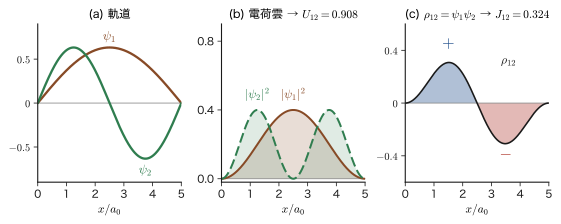
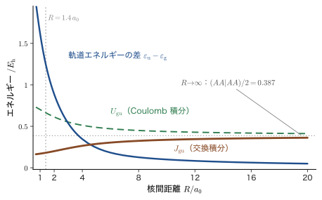
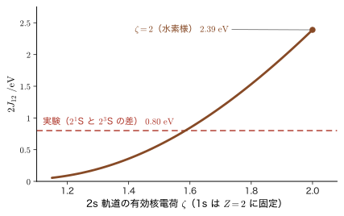

第35章Hartree–Fock 近似のエネルギー — 基底状態・励起状態と Coulomb 積分・交換積分
第33章で，電子が 2 個以上ある系の波動関数を，1 電子の状態（スピン軌道）を並べた Slater（スレーター）行列式 $\Phi$ で近似することにした．この章の仕事は，その $\Phi$ のエネルギー $E=\mel{\Phi}{\hat{H}}{\Phi}$ を，行を 1 つも飛ばさずに実際に計算することである．エネルギーが計算できれば，変分原理（第30章）によって「どの軌道の組がいちばん良い近似か」を探せる（それが次の第36章の Hartree–Fock 方程式である）．また，励起した状態のエネルギーが計算できれば，物質が吸収・発光する光の色（電子遷移のエネルギー）を見積もることもできる．第34章（多電子原子）で見た電子配置・項記号・Hund の規則に，Slater 行列式のエネルギーの言葉で裏づけを与える章でもある．
計算の結果は，見通しが良い．Slater 行列式のエネルギーは，どの電子対についても，次の 3 種類の量だけでできている．第 1 は1 電子エネルギー $h_{aa}$（電子の運動エネルギーと原子核との引力）．第 2 は Coulomb（クーロン）積分 $U_{ab}$：2 個の電子雲の間の静電反発エネルギーで，古典電磁気学（AD 03 第36章 36.8 の，連続的に分布した電荷のつくる電位）でも同じ形の量が現れる．第 3 は交換積分 $J_{ab}$：古典物理には対応物がなく，「同種の電子は区別できない」ことと Pauli の排他原理から生まれる量である．$J_{ab}$ は正の値をとり，スピンが平行な電子対のエネルギーだけを $J_{ab}$ 下げる．この一点から，Hund（フント）の規則（スピンをそろえて電子を別々の軌道に入れるほど安定），ヘリウム原子の一重項と三重項のエネルギー差が説明される．鉄の強磁性のような材料の磁性も，この交換相互作用が出発点になる．
この章では，行列式を展開したときに「どの項が消え，どの項が残るか」を，2 つの規則だけで決める．(i) スピン関数の直交性 $\int\alpha^*\beta\,\dd\sigma=0$．(ii) 異なる軌道の直交性 $\int\psi_1^*\psi_2\,\dd\bm{r}=0$．この判定を，2 電子系の基底状態，1 電子励起状態，2 電子励起状態について 1 項ずつ確かめ，最後に電子数が $N$ 個の一般の場合（Slater–Condon の規則）へ広げる．有機 EL（OLED）の発光効率の理論限界（25 %）や，熱活性化遅延蛍光（TADF）の材料設計が，ここで求める $J_{ab}$ の大きさに直結していることも見る．
- スピン軌道 $\chi_a=\psi_a\alpha$，$\bar{\chi}_a=\psi_a\beta$ と準位図で 2 電子系の状態を書き分け，2 電子の Slater 行列式を空間部分とスピン部分の積に展開できること
- 基底状態 $\Phi_{\mathrm g}$ のエネルギー $E_{\mathrm g}=2h_{11}+U_{11}$ を，4 項の展開とスピン積分の規則から導き，ヘリウム原子で数値を出せること
- Coulomb 積分 $U_{ab}$ と交換積分 $J_{ab}$ の定義，物理的な意味（電荷雲の反発と，重なり密度の自己反発），性質（$U_{ab}\gt0$，$J_{ab}\ge0$，$U_{ab}\ge J_{ab}$）を説明できること．また，Szabo–Ostlund や AD 07 の $J$，$K$ との対応を言えること
- 行列式の列の並べ替えで符号だけが変わること（$\Phi_{\mathrm g'}=-\Phi_{\mathrm g}$）を使って，「基底状態は 1 つしかない」ことを説明できること
- 励起状態 $\Phi_a$，$\Phi_b$，$\Phi_c$，$\Phi_{\mathrm{ex}}$ の重なり積分・非対角要素・対角要素を計算し，「重なりが 0 でもハミルトニアンの行列要素は 0 とは限らない」こと（$\mel{\Phi_a}{\hat{H}}{\Phi_b}=-J_{12}$），および Brillouin（ブリュアン）の定理を説明できること
- $E_{\mathrm S}=E_a+J_{12}$，$E_{\mathrm T}=E_a-J_{12}$（分裂 $2J_{12}$）を導き，ヘリウム原子の 1s2s 状態の数値と，OLED・TADF の設計指針に結びつけられること
- 一般の Slater 行列式のエネルギー $E=\sum_a h_{aa}+\tfrac12\sum_{a,b}(U_{ab}-J_{ab})$ と Slater–Condon の規則を述べ，電子相関エネルギー $E_{\mathrm{corr}}=E_{\mathrm{exact}}-E_{\mathrm{HF}}$ の意味を説明できること
もとにしたノート：望月泰英『物理学ノート 量子力学3』 pp. 50–56．
35.1 スピン軌道で書く 2 電子系 — 記号・準位図・ハミルトニアン
35.1.1 何を計算するのか — 2 電子系から始める
電子が 2 個の系（ヘリウム原子，水素分子，2 個の電子を閉じ込めた量子ドットなど）を考える．原子核の位置は固定しておく（Born–Oppenheimer 近似．第33章 33.2）．電子が 1 個だけのときの軌道 $\psi_1,\psi_2,\dots$ が，エネルギーの低い順に番号を付けて用意されていて，互いに直交し規格化されているとする：$\int\psi_a^*\psi_b\,\dd\bm{r}=\delta_{ab}$．この軌道に 2 個の電子をどう入れるかを，Pauli の排他原理を満たす Slater 行列式で書き，そのエネルギー期待値を求めるのがこの章の仕事である．行列式が $2\times2$ なので，展開しても 2 項しかなく，途中式を 1 行も飛ばさずに書き下せる．電子が $N$ 個の一般の場合は 35.7 節で扱う．
ここでの計算は，Hartree–Fock 近似の第一歩にあたる．Hartree–Fock 近似とは，多電子の波動関数を 1 個の Slater 行列式で近似することをいう．この章の前半（35.2〜35.6 節）では，軌道 $\psi_a$ は任意（互いに直交し規格化されているだけ）として，1 個の Slater 行列式のエネルギーの式を作る．軌道を変分原理で最適にした結果が Hartree–Fock 方程式（第36章）で，最適な軌道の Slater 行列式のエネルギーを $E_{\mathrm{HF}}$ と書く（軌道の最適化を最初に使うのは Brillouin の定理，35.5.4 節）．軌道が何であっても，エネルギー期待値 $E=\mel{\Phi}{\hat{H}}{\Phi}$ を計算すると，1 電子のエネルギーのほかに，電子どうしの Coulomb 反発に由来する 2 種類の項——電荷雲どうしの反発を表す Coulomb 項と，Pauli の排他原理に由来する交換項——が現れる．この 2 つの項がそれぞれ何であるかを，以下で 1 項ずつ確かめる．
35.1.2 スピン軌道 $\chi_a$，$\bar{\chi}_a$ と準位図
電子の状態は，空間の関数 $\psi_a(\bm{r})$ とスピンの関数の積で表される．スピンの関数は，スピンの $z$ 成分が $+\hbar/2$ の $\alpha(\sigma)$（上向き $\uparrow$，$\ket{\uparrow}$ とも書く）と，$-\hbar/2$ の $\beta(\sigma)$（下向き $\downarrow$，$\ket{\downarrow}$ とも書く）である（第23章 23.5）．電子の座標は，空間座標 $\bm{r}$ とスピン変数 $\sigma=\pm\tfrac12$ をまとめて $\bm{x}=(\bm{r},\sigma)$ と書き，$\bm{x}$ についての積分は，空間座標 $\bm{r}$ の積分とスピン変数 $\sigma$ についての和をとることを意味する（以下では $\int\dd\bm{x}=\int\dd\bm{r}\int\dd\sigma$ と書く）．
定義35.1 スピン軌道 $\chi_a$，$\bar{\chi}_a$
空間軌道 $\psi_a(\bm{r})$ にスピン関数をかけた 1 電子の状態
\begin{equation} \chi_a(\bm{x})=\psi_a(\bm{r})\,\alpha(\sigma),\qquad \bar{\chi}_a(\bm{x})=\psi_a(\bm{r})\,\beta(\sigma) \label{eq:35-chi} \end{equation}をスピン軌道（spin orbital）という．添字 $a=1,2,\dots$ は軌道の量子数に対応し，エネルギーの低い順に番号を付ける．文字の上のバー（$\bar{\chi}$）は，$\beta$ スピン（下向き）をもつことを表す．同じ空間軌道 $\psi_a$ から，$\chi_a$ と $\bar{\chi}_a$ の 2 つのスピン軌道ができる．
電子 1 と電子 2 に分けて書くと，式 \eqref{eq:35-chi} は
$$ \begin{cases} \chi_1(\bm{x}_1)=\psi_1(\bm{r}_1)\,\alpha(\sigma_1)\\ \bar{\chi}_1(\bm{x}_1)=\psi_1(\bm{r}_1)\,\beta(\sigma_1) \end{cases} \qquad \begin{cases} \chi_1(\bm{x}_2)=\psi_1(\bm{r}_2)\,\alpha(\sigma_2)\\ \bar{\chi}_1(\bm{x}_2)=\psi_1(\bm{r}_2)\,\beta(\sigma_2) \end{cases} $$となる．電子 1 も電子 2 も同じ関数 $\chi_1$ に自分の座標を代入しているだけで，どちらの電子かを区別する印は座標の添字以外にない．
スピン関数は，スピン変数についての積分（和）で，次の直交性をもつ：
\begin{equation} \int\alpha^*(\sigma)\alpha(\sigma)\,\dd\sigma=\int\beta^*(\sigma)\beta(\sigma)\,\dd\sigma=1,\qquad \int\alpha^*(\sigma)\beta(\sigma)\,\dd\sigma=\int\beta^*(\sigma)\alpha(\sigma)\,\dd\sigma=0 \label{eq:35-spin} \end{equation}（$\alpha(\sigma)$ は $\sigma=+\tfrac12$ でだけ 1，$\beta(\sigma)$ は $\sigma=-\tfrac12$ でだけ 1 になる関数なので，$\alpha^*\beta$ はどの $\sigma$ でも 0 になり，和も 0 である．）この直交性が，以下の計算で項が消えるかどうかを決める第 1 の規則になる．軌道についても同様に，$\int\psi_a^*\psi_b\,\dd\bm{r}=\delta_{ab}$（第 2 の規則）を使う．2 つのスピン軌道の内積は，この 2 つの規則の積になる：
\begin{equation} \braket{\chi_a}{\chi_b}=\braket{\psi_a}{\psi_b}\cdot1=\delta_{ab},\qquad \braket{\chi_a}{\bar{\chi}_b}=\braket{\psi_a}{\psi_b}\cdot\underbrace{\int\alpha^*\beta\,\dd\sigma}_{0}=0 \label{eq:35-chiorth} \end{equation}2 電子がどのスピン軌道に入っているかは，準位図で表す．横線が空間軌道 $\psi_a$（下ほどエネルギーが低い），矢印が電子で，上向きの矢印は $\alpha$ スピン，下向きの矢印は $\beta$ スピンを表す．図35.1 は，2 つの軌道 $\psi_1$（低い），$\psi_2$（高い）に 2 個の電子を入れた 2 つの状態である．左は 2 個の電子がどちらも低い軌道 $\psi_1$ にいる基底状態 $\Phi_{\mathrm g}$（g は ground の意），右は 2 個の電子がどちらも高い軌道 $\psi_2$ に上がった 2 電子励起状態 $\Phi_{\mathrm{ex}}$（ex は excited の意）である．同じ軌道に入れる電子は，スピンが逆向きの 2 個までである（Pauli の排他原理）．
略記（縦棒）．以下では，2 電子の Slater 行列式（第33章の規約：行が電子，列が軌道）を，列に並べるスピン軌道を縦棒ではさんで
\begin{equation} \Phi=\lvert\chi_a\chi_b\rvert\equiv\frac{1}{\sqrt2} \begin{vmatrix} \chi_a(\bm{x}_1)&\chi_b(\bm{x}_1)\\ \chi_a(\bm{x}_2)&\chi_b(\bm{x}_2) \end{vmatrix} \label{eq:35-bar} \end{equation}と書く．これは，どのスピン軌道を列に入れた行列式かを示して，$\Phi_{\mathrm g}=\lvert\chi_1\bar{\chi}_1\rvert$ のように添字付きの $\Phi$ を区別するための記号である．波動関数そのものは，第33章のとおり行列式（または 35.1.3 のように展開した式）である．また，行列要素の中の 2 電子の積 $\mel{\chi_a\chi_b}{v}{\chi_c\chi_d}$（35.3）は縦棒のない別の記号である．
35.1.3 基底状態の Slater 行列式を展開する
基底状態 $\Phi_{\mathrm g}$ は，2 個の電子がスピン軌道 $\chi_1$（下の準位の上向き）と $\bar{\chi}_1$（下の準位の下向き）にいる状態である．第33章の規約（行が電子，列が軌道，係数 $1/\sqrt{N!}$）で Slater 行列式を書くと，
\begin{equation} \Phi_{\mathrm g}(\bm{x}_1,\bm{x}_2)=\frac{1}{\sqrt2} \begin{vmatrix} \chi_1(\bm{x}_1)&\bar{\chi}_1(\bm{x}_1)\\ \chi_1(\bm{x}_2)&\bar{\chi}_1(\bm{x}_2) \end{vmatrix} =\frac{1}{\sqrt2}\Bigl[\chi_1(\bm{x}_1)\,\bar{\chi}_1(\bm{x}_2)-\bar{\chi}_1(\bm{x}_1)\,\chi_1(\bm{x}_2)\Bigr] \label{eq:35-Phig} \end{equation}である（$2\times2$ の行列式は「左上×右下 − 右上×左下」）．以下では，この関数が表す状態を $\ket{\Phi_{\mathrm g}}$ とも書く．式 \eqref{eq:35-chi} を代入して，スピン関数を軌道の関数から分けると，
\begin{align} \Phi_{\mathrm g} &=\frac{1}{\sqrt2}\Bigl[\psi_1(\bm{r}_1)\alpha(\sigma_1)\,\psi_1(\bm{r}_2)\beta(\sigma_2)-\psi_1(\bm{r}_1)\beta(\sigma_1)\,\psi_1(\bm{r}_2)\alpha(\sigma_2)\Bigr] \notag\\ &=\psi_1(\bm{r}_1)\psi_1(\bm{r}_2)\cdot\frac{1}{\sqrt2}\Bigl[\alpha(\sigma_1)\beta(\sigma_2)-\alpha(\sigma_2)\beta(\sigma_1)\Bigr] \label{eq:35-Phig2} \end{align}となる．2 行目では，2 つの項が同じ空間部分 $\psi_1(\bm{r}_1)\psi_1(\bm{r}_2)$ をもつことを使ってくくり出した（スピン関数どうしは可換な数なので，$\beta(\sigma_1)\alpha(\sigma_2)=\alpha(\sigma_2)\beta(\sigma_1)$ と順序を入れ替えられる）．
イメージ：空間は対称，スピンは反対称
式 \eqref{eq:35-Phig2} の空間部分 $\psi_1(\bm{r}_1)\psi_1(\bm{r}_2)$ は，電子 1 と 2 の入れ替えで変わらない（対称）．スピン部分 $\bigl[\alpha(\sigma_1)\beta(\sigma_2)-\alpha(\sigma_2)\beta(\sigma_1)\bigr]/\sqrt2$ は，入れ替えで符号が変わる（反対称）．これは 2 個のスピン $\tfrac12$ の一重項（全スピン $S=0$）にほかならない（第25章 25.8）．「対称 × 反対称 = 反対称」なので Pauli の排他原理は満たされている．同じ軌道に入る 2 個の電子は，スピンが逆向きの一重項をつくるしかない．
例題35.1 $\Phi_{\mathrm g}$ の規格化
式 \eqref{eq:35-Phig2} の $\Phi_{\mathrm g}$ が $\braket{\Phi_{\mathrm g}}{\Phi_{\mathrm g}}=1$ を満たすことを，積分を実行して確かめよ．ただし $\psi_1$ は規格化されている．
解答 空間部分とスピン部分が積の形なので，積分も積になる：
$$ \braket{\Phi_{\mathrm g}}{\Phi_{\mathrm g}} =\underbrace{\int\lvert\psi_1(\bm{r}_1)\rvert^2\dd\bm{r}_1}_{1}\ \underbrace{\int\lvert\psi_1(\bm{r}_2)\rvert^2\dd\bm{r}_2}_{1}\cdot\frac12\iint\Bigl\lvert\alpha(\sigma_1)\beta(\sigma_2)-\beta(\sigma_1)\alpha(\sigma_2)\Bigr\rvert^2\dd\sigma_1\dd\sigma_2 . $$スピンの積分の被積分関数を展開する．$\lvert A-B\rvert^2=\lvert A\rvert^2+\lvert B\rvert^2-A^*B-AB^*$ で，$A=\alpha(\sigma_1)\beta(\sigma_2)$，$B=\beta(\sigma_1)\alpha(\sigma_2)$ とおくと，
$$ \iint\lvert A\rvert^2=\int\lvert\alpha\rvert^2\dd\sigma_1\int\lvert\beta\rvert^2\dd\sigma_2=1\cdot1,\qquad \iint\lvert B\rvert^2=\int\lvert\beta\rvert^2\dd\sigma_1\int\lvert\alpha\rvert^2\dd\sigma_2=1\cdot1, $$ $$ \iint A^*B=\underbrace{\int\alpha^*(\sigma_1)\beta(\sigma_1)\dd\sigma_1}_{0}\cdot\int\beta^*(\sigma_2)\alpha(\sigma_2)\dd\sigma_2=0,\qquad \iint AB^*=0 . $$したがってスピンの積分は $1+1-0-0=2$ で，$\braket{\Phi_{\mathrm g}}{\Phi_{\mathrm g}}=1\cdot1\cdot\tfrac12\cdot2=1$．係数 $1/\sqrt2$ は，2 つの項の重なりが 0（直交）なので，2 で割れば規格化される，という役割を果たしている．
35.1.4 ハミルトニアンと，1 電子項・2 電子項
原子核 1 個（核電荷 $Z$）のまわりの 2 電子系のハミルトニアンは，原子単位（第33章 33.1）で，
\begin{equation} \hat{H}=\underbrace{-\frac12\nabla_1^2-\frac{Z}{r_1}}_{\hat{h}_1}\ \underbrace{-\frac12\nabla_2^2-\frac{Z}{r_2}}_{\hat{h}_2}\ +\ \underbrace{\frac{1}{r_{12}}}_{v} \qquad(r_i=\lvert\bm{r}_i\rvert,\ \ r_{12}=\lvert\bm{r}_1-\bm{r}_2\rvert) \label{eq:35-Ham} \end{equation}である（電子が 2 個のヘリウム型の系で，$Z=1$ なら水素化物イオン $\mathrm{H^-}$，$Z=2$ ならヘリウム原子，$Z=3$ なら $\mathrm{Li^+}$）．運動エネルギー（$-\tfrac12\nabla^2$），核との引力（$-Z/r$），電子間の Coulomb 反発（$1/r_{12}$）の 3 種類の項からなる．原子単位では，エネルギーの単位が Hartree $E_{\mathrm h}$，長さの単位が Bohr 半径 $a_0$ であり，$1/r_{12}$ は SI 単位系の $e_0^2/(4\pi\varepsilon_0r_{12})$ に対応する．分子や固体では，核との引力の項を一般の 1 電子ポテンシャル $V_{\mathrm{ext}}(\bm{r})$ に置き換えるだけでよい．そこで，1 個の電子だけのハミルトニアンを
\begin{equation} \hat{h}(\bm{r})=-\frac12\nabla^2+V_{\mathrm{ext}}(\bm{r})\qquad(\text{原子では }V_{\mathrm{ext}}(\bm{r})=-Z/r) \label{eq:35-h} \end{equation}とおく．2 電子間の反発 $1/r_{12}$ は，式 \eqref{eq:35-Ham} の $v$ と同じ記号で，積分のブラ・ケットの中では $v\equiv1/r_{12}$ と略記する（$\mel{\chi_a\chi_b}{v}{\chi_c\chi_d}$ は 2 電子演算子 $v$ を挟んだ積分であり，1 電子ポテンシャル $V_{\mathrm{ext}}$ とは別のものである）．1 電子演算子は，第33章・第34章と同じく $\hat{h}$（$\hat{h}_1,\hat{h}_2$）とハットを付けて書く．2 電子の項 $v$ は座標の関数 $1/r_{12}$ を掛ける演算で，積分記号の中の名前として使うため，第36章・第37章と同じくハットを付けない．
注意：$\hat{h}_1$，$\hat{h}_2$ は「$\hat{h}(\bm{r}_1)$，$\hat{h}(\bm{r}_2)$」
式 \eqref{eq:35-Ham} の $\hat{h}_1,\hat{h}_2$ は，別々の演算子ではなく，同じ演算子 $\hat{h}$ の変数を電子 1 の座標 $\bm{r}_1$，電子 2 の座標 $\bm{r}_2$ にしたもの：$\hat{h}_1=\hat{h}(\bm{r}_1)$，$\hat{h}_2=\hat{h}(\bm{r}_2)$ である．したがって，たとえば $\mel{\chi_1}{\hat{h}_1}{\chi_1}$ と $\mel{\chi_1}{\hat{h}_2}{\chi_1}$ は，積分変数の名前が違うだけで同じ値をもつ（積分変数は名前を付け替えても値が変わらない）．
ここで大事なのは，式 \eqref{eq:35-Ham} のハミルトニアンにスピン変数 $\sigma$ が現れないことである（スピン軌道相互作用のような，スピンに作用する項は無視している）．そのため，$\hat{H}$ の各項を波動関数にかけるとき，スピン関数はそのまま「通り抜け」，スピンの積分は単に内積になる．具体的には，1 電子積分と 2 電子積分を次のように書き，スピンの部分は軌道の部分から分けて計算する．
定義35.2 1 電子積分と 2 電子積分の記法
スピン軌道 $\chi_a,\chi_b,\chi_c,\chi_d$（スピン関数が $s_a,s_b,s_c,s_d$）に対して，
\begin{align} h_{ab}&\equiv\mel{\chi_a}{\hat{h}}{\chi_b}=\int\chi_a^*(\bm{x})\,\hat{h}(\bm{r})\,\chi_b(\bm{x})\,\dd\bm{x}=\mel{\psi_a}{\hat{h}}{\psi_b}\,\braket{s_a}{s_b}, \label{eq:35-hab}\\ \mel{\chi_a\chi_b}{\tfrac{1}{r_{12}}}{\chi_c\chi_d}&\equiv\iint\chi_a^*(\bm{x}_1)\,\chi_b^*(\bm{x}_2)\,\frac{1}{r_{12}}\,\chi_c(\bm{x}_1)\,\chi_d(\bm{x}_2)\,\dd\bm{x}_1\dd\bm{x}_2 =\mel{\psi_a\psi_b}{\tfrac{1}{r_{12}}}{\psi_c\psi_d}\,\braket{s_a}{s_c}\braket{s_b}{s_d} \label{eq:35-brk} \end{align}とする．ブラ（ケット）の中の1 番目の $\chi$ が電子 1 の座標，2 番目の $\chi$ が電子 2 の座標に対応する（$a,c$ が電子 1，$b,d$ が電子 2）．ここで $\braket{s}{s'}$ はスピン関数の内積で，表35.1 の値をとる．軌道だけの積分 $\mel{\psi_a\psi_b}{1/r_{12}}{\psi_c\psi_d}$ は，$\chi$ を $\psi$ に置き換え，$\bm{x}$ の積分を $\bm{r}$ の積分にしたものである．
| ブラ＼ケット | $\alpha$（$\uparrow$） | $\beta$（$\downarrow$） |
|---|---|---|
| $\bra{\alpha}$ | $1$ | $0$ |
| $\bra{\beta}$ | $0$ | $1$ |
式 \eqref{eq:35-hab}，\eqref{eq:35-brk} により，行列式を展開して現れる各項が 0 かどうかは，次の 2 段階の判定で決まる．
- スピンの判定：電子ごとに，ブラ側とケット側のスピン関数が同じか（表35.1）．異なる電子が 1 人でもいれば，その項は 0．
- 軌道の判定：スピンが生き残った項の軌道積分が 0 か．とくに，電子 1 人だけの因子 $\braket{\psi_a}{\psi_b}$（$a\ne b$）は，軌道の直交性で 0．
以下の節では，この判定を各項に対して 1 回ずつ実行する．
35.2 基底状態のエネルギー期待値
35.2.1 期待値を 3 つの部分に分ける
基底状態のエネルギー期待値は，式 \eqref{eq:35-Phig} の $\Phi_{\mathrm g}$ を式 \eqref{eq:35-Ham} の $\hat{H}$ で挟んだ積分である．式 \eqref{eq:35-Phig} の複素共役をとって左から，そのままを右から書くと，
\begin{align} \mel{\Phi_{\mathrm g}}{\hat{H}}{\Phi_{\mathrm g}} =\iint\dd\bm{x}_1\dd\bm{x}_2\ \frac12&\Bigl[\chi_1^*(\bm{x}_1)\bar{\chi}_1^*(\bm{x}_2)-\bar{\chi}_1^*(\bm{x}_1)\chi_1^*(\bm{x}_2)\Bigr]\notag\\ &\times\Bigl(\hat{h}_1+\hat{h}_2+\frac{1}{r_{12}}\Bigr)\Bigl[\chi_1(\bm{x}_1)\bar{\chi}_1(\bm{x}_2)-\bar{\chi}_1(\bm{x}_1)\chi_1(\bm{x}_2)\Bigr] \label{eq:35-Eg0} \end{align}である．括弧の中の 3 つの演算子は足し算なので，期待値も 3 つの部分に分けて，1 つずつ計算する：
$$ \mel{\Phi_{\mathrm g}}{\hat{H}}{\Phi_{\mathrm g}}=\mel{\Phi_{\mathrm g}}{\hat{h}_1}{\Phi_{\mathrm g}}+\mel{\Phi_{\mathrm g}}{\hat{h}_2}{\Phi_{\mathrm g}}+\mel{\Phi_{\mathrm g}}{\tfrac{1}{r_{12}}}{\Phi_{\mathrm g}} . $$どの部分も，2 つの角括弧を掛け合わせて得られる 4 項の積分の和になる．各項は「電子 1 についての積分」と「電子 2 についての積分」の積に分かれるので，35.1.4 節の 2 段階の判定（スピン，軌道）を各項に適用すればよい．
35.2.2 1 電子項 $\mel{\Phi_{\mathrm g}}{\hat{h}_1}{\Phi_{\mathrm g}}$
$\hat{h}_1$ は電子 1 の座標 $\bm{r}_1$ にだけ作用するので，電子 2 の波動関数には作用しない．式 \eqref{eq:35-Eg0} の 2 つの角括弧を掛けて 4 項に展開すると，
\begin{align} \mel{\Phi_{\mathrm g}}{\hat{h}_1}{\Phi_{\mathrm g}}=\frac12\Bigl[ &\underbrace{\int\chi_1^*(\bm{x}_1)\hat{h}_1\chi_1(\bm{x}_1)\dd\bm{x}_1}_{\mel{\chi_1}{\hat{h}}{\chi_1}}\int\bar{\chi}_1^*(\bm{x}_2)\bar{\chi}_1(\bm{x}_2)\dd\bm{x}_2 +\underbrace{\int\bar{\chi}_1^*(\bm{x}_1)\hat{h}_1\bar{\chi}_1(\bm{x}_1)\dd\bm{x}_1}_{\mel{\bar{\chi}_1}{\hat{h}}{\bar{\chi}_1}}\int\chi_1^*(\bm{x}_2)\chi_1(\bm{x}_2)\dd\bm{x}_2\notag\\ &-\int\chi_1^*(\bm{x}_1)\hat{h}_1\bar{\chi}_1(\bm{x}_1)\dd\bm{x}_1\underbrace{\int\bar{\chi}_1^*(\bm{x}_2)\chi_1(\bm{x}_2)\dd\bm{x}_2}_{0} -\int\bar{\chi}_1^*(\bm{x}_1)\hat{h}_1\chi_1(\bm{x}_1)\dd\bm{x}_1\underbrace{\int\chi_1^*(\bm{x}_2)\bar{\chi}_1(\bm{x}_2)\dd\bm{x}_2}_{0}\Bigr] \label{eq:35-h1exp} \end{align}となる．4 項の中身を判定しよう．
- 第 1 項：電子 2 の因子は $\int\bar{\chi}_1^*\bar{\chi}_1\dd\bm{x}_2=\braket{\psi_1}{\psi_1}\braket{\beta}{\beta}=1$．電子 1 の因子は $\mel{\chi_1}{\hat{h}}{\chi_1}=\mel{\psi_1}{\hat{h}}{\psi_1}\braket{\alpha}{\alpha}=h_{11}$．
- 第 2 項：同様に，電子 2 の因子は 1，電子 1 の因子は $\mel{\bar{\chi}_1}{\hat{h}}{\bar{\chi}_1}=\mel{\psi_1}{\hat{h}}{\psi_1}\braket{\beta}{\beta}=h_{11}$．第 1 項と第 2 項の電子 1 の因子は同じ値である（$\chi_1$ と $\bar{\chi}_1$ は空間部分 $\psi_1$ が同じで，$\hat{h}$ はスピンに作用しないため）．
- 第 3・4 項：電子 2 の因子が $\int\bar{\chi}_1^*\chi_1\dd\bm{x}_2=\braket{\psi_1}{\psi_1}\int\beta^*\alpha\,\dd\sigma_2=0$（および $\int\alpha^*\beta\,\dd\sigma_2=0$）．$\alpha^*\beta$ 型のスピン積分 0 のために，これらの項は消える．（電子 1 の因子も $\int\alpha^*\beta\,\dd\sigma_1=0$ で 0．）
以上から，
\begin{equation} \mel{\Phi_{\mathrm g}}{\hat{h}_1}{\Phi_{\mathrm g}}=\frac12h_{11}+\frac12h_{11}=h_{11}, \qquad h_{11}\equiv\mel{\psi_1}{\hat{h}}{\psi_1}=\int\psi_1^*(\bm{r})\,\hat{h}(\bm{r})\,\psi_1(\bm{r})\,\dd\bm{r} \label{eq:35-h1g} \end{equation}である．電子 2 の項 $\mel{\Phi_{\mathrm g}}{\hat{h}_2}{\Phi_{\mathrm g}}$ も，電子 1 と 2 の役割を入れ替えるだけで同じ計算になり（$\bm{x}_1\leftrightarrow\bm{x}_2$ と名前を付け替えると，$\Phi_{\mathrm g}$ は符号が変わるだけで，期待値は変わらない）：
$$ \mel{\Phi_{\mathrm g}}{\hat{h}_2}{\Phi_{\mathrm g}}=\frac12\int\psi_1^*(\bm{r}_2)\hat{h}_2\psi_1(\bm{r}_2)\dd\bm{r}_2+\frac12\int\psi_1^*(\bm{r}_2)\hat{h}_2\psi_1(\bm{r}_2)\dd\bm{r}_2=h_{11} . $$つまり 1 電子項は，2 個の電子がそれぞれ軌道 $\psi_1$ で 1 電子のエネルギー $h_{11}$ をもつと考えたときの和 $2h_{11}$ になる．
35.2.3 2 電子項 $\mel{\Phi_{\mathrm g}}{1/r_{12}}{\Phi_{\mathrm g}}$
電子間反発 $1/r_{12}$ は $\bm{r}_1$ と $\bm{r}_2$ の両方に依存するので，1 電子項のように電子ごとの積には分けられない．それでも，2 つの角括弧を掛けて 4 項に展開し，各項でスピンの積分を先に済ませることができる．
\begin{align} \mel{\Phi_{\mathrm g}}{\tfrac{1}{r_{12}}}{\Phi_{\mathrm g}}=\frac12\iint\dd\bm{x}_1\dd\bm{x}_2\Bigl[ &\chi_1^*(\bm{x}_1)\chi_1(\bm{x}_1)\frac{1}{r_{12}}\bar{\chi}_1^*(\bm{x}_2)\bar{\chi}_1(\bm{x}_2) +\bar{\chi}_1^*(\bm{x}_1)\bar{\chi}_1(\bm{x}_1)\frac{1}{r_{12}}\chi_1^*(\bm{x}_2)\chi_1(\bm{x}_2)\notag\\ &-\chi_1^*(\bm{x}_1)\bar{\chi}_1(\bm{x}_1)\frac{1}{r_{12}}\bar{\chi}_1^*(\bm{x}_2)\chi_1(\bm{x}_2) -\bar{\chi}_1^*(\bm{x}_1)\chi_1(\bm{x}_1)\frac{1}{r_{12}}\chi_1^*(\bm{x}_2)\bar{\chi}_1(\bm{x}_2)\Bigr] \label{eq:35-vexp} \end{align}各項の電子 1 の因子と電子 2 の因子について，スピンの積分を調べる．
- 第 1 項：電子 1 は $\chi_1^*\chi_1$（スピン $\alpha^*\alpha$，積分 1），電子 2 は $\bar{\chi}_1^*\bar{\chi}_1$（$\beta^*\beta$，積分 1）．スピン積分は 1 のまま生き残り，軌道の積分 $\iint\lvert\psi_1(\bm{r}_1)\rvert^2\dfrac{1}{r_{12}}\lvert\psi_1(\bm{r}_2)\rvert^2\dd\bm{r}_1\dd\bm{r}_2$ だけが残る．
- 第 2 項：電子 1 は $\beta^*\beta$，電子 2 は $\alpha^*\alpha$ で，やはり生き残る．軌道の積分は第 1 項と同じ．
- 第 3 項：電子 1 のスピンが $\chi_1^*\bar{\chi}_1\to\alpha^*\beta$，電子 2 のスピンが $\bar{\chi}_1^*\chi_1\to\beta^*\alpha$ で，どちらも積分は 0．
- 第 4 項：電子 1 が $\beta^*\alpha$，電子 2 が $\alpha^*\beta$ で，積分は 0．
したがって，第 3・4 項（この 2 項が，Pauli の排他原理による反対称化から生まれる「交換項」である）は，スピンの直交性のために消える．生き残った第 1・2 項は同じ値をもつので，
\begin{equation} \mel{\Phi_{\mathrm g}}{\tfrac{1}{r_{12}}}{\Phi_{\mathrm g}} =\mel{\chi_1\bar{\chi}_1}{\tfrac{1}{r_{12}}}{\chi_1\bar{\chi}_1}-\underbrace{\mel{\chi_1\bar{\chi}_1}{\tfrac{1}{r_{12}}}{\bar{\chi}_1\chi_1}}_{\text{スピンのために }0} =\iint\lvert\psi_1(\bm{r}_1)\rvert^2\frac{1}{r_{12}}\lvert\psi_1(\bm{r}_2)\rvert^2\dd\bm{r}_1\dd\bm{r}_2\equiv U_{11} \label{eq:35-vg} \end{equation}である．最初の等号では，第 1 項と第 2 項を，電子 1 と 2 の名前の付け替えで同じ積分 $\mel{\chi_1\bar{\chi}_1}{v}{\chi_1\bar{\chi}_1}$ にまとめ（$\tfrac12+\tfrac12=1$），第 3・4 項も同様に $-\mel{\chi_1\bar{\chi}_1}{v}{\bar{\chi}_1\chi_1}$ にまとめた．この式の第 1 項を Coulomb 項，第 2 項を交換項と呼ぶ．基底状態では，電子 1 が $\chi_1$（$\alpha$ スピン）に，電子 2 が $\bar{\chi}_1$（$\beta$ スピン）にいるので，交換項はスピンの積分 $\braket{\alpha}{\beta}\braket{\beta}{\alpha}=0$ で消える．消えずに残る Coulomb 項 $U_{11}$ は，電荷雲 $\lvert\psi_1\rvert^2$ どうしの古典的な静電反発エネルギーである．
35.2.4 基底状態のエネルギー
1 電子項 $2h_{11}$（式 \eqref{eq:35-h1g} とその電子 2 の版）と 2 電子項 $U_{11}$（式 \eqref{eq:35-vg}）を足す．
\begin{align} \mel{\Phi_{\mathrm g}}{\hat{H}}{\Phi_{\mathrm g}} &=\mel{\chi_1}{\hat{h}_1}{\chi_1}+\mel{\chi_1}{\hat{h}_2}{\chi_1}+\mel{\chi_1\bar{\chi}_1}{\tfrac{1}{r_{12}}}{\chi_1\bar{\chi}_1}-\mel{\chi_1\bar{\chi}_1}{\tfrac{1}{r_{12}}}{\bar{\chi}_1\chi_1}\notag\\ &=h_{11}+h_{11}+U_{11}-0 \label{eq:35-Eg1} \end{align}1 行目の $\mel{\chi_1}{\hat{h}_2}{\chi_1}$ は電子 2 の座標での積分で，$\mel{\chi_1}{\hat{h}_1}{\chi_1}$ と（積分変数の名前が違うだけで）同じ値をもつ．
定理35.1 2 電子の基底状態 $\Phi_{\mathrm g}$ のエネルギー
2 個の電子が同じ空間軌道 $\psi_1$ に逆向きのスピンで入った Slater 行列式 $\Phi_{\mathrm g}=\lvert\chi_1\bar{\chi}_1\rvert$ の，ハミルトニアン $\hat{H}=\hat{h}_1+\hat{h}_2+1/r_{12}$ の期待値は
\begin{equation} E_{\mathrm g}=\mel{\Phi_{\mathrm g}}{\hat{H}}{\Phi_{\mathrm g}}=2h_{11}+U_{11} \label{eq:35-Eg} \end{equation}である．ここで $h_{11}=\mel{\psi_1}{\hat{h}}{\psi_1}$ は 1 電子エネルギー，$U_{11}=\mel{\psi_1\psi_1}{1/r_{12}}{\psi_1\psi_1}$ は軌道 $\psi_1$ の電荷雲どうしの Coulomb 積分（35.3 節）である．交換項はスピンのために 0 になる．
言い換えると，Hartree–Fock 近似の基底状態のエネルギーは，「2 個の電子が独立に軌道 $\psi_1$ にいるときの 1 電子エネルギーの和」に，「2 個の電子雲の古典的な静電反発」だけを足したものである．逆向きスピンの 2 電子には，量子力学的な補正（交換項）が現れない．
この結果を，Hartree–Fock 近似のエネルギーの見方としてまとめておく．エネルギーは，(i) 軌道の 1 電子エネルギー $h_{aa}$（運動エネルギーと核との引力），(ii) 電荷雲どうしの Coulomb 反発 $U$，(iii) 平行スピンの電子対にだけ現れる交換エネルギー $-J$ の 3 つでできている．反平行スピンの 2 電子では (iii) が 0 になる．電子どうしが互いに避け合って反発を減らす効果（電子相関）は，この 3 つのどれにも含まれていない（35.7 節）．(iii) を含む一般の $N$ 電子の式は，35.7.1 節の式 \eqref{eq:35-EN} で導く．
例題35.2 ヘリウム原子の基底状態のエネルギー — 水素様の 1s 軌道を使うと
ヘリウム原子（$Z=2$）の基底状態を，$Z=2$ の水素様 1s 軌道 $\psi_{1\mathrm s}=\sqrt{Z^3/\pi}\,e^{-Zr}$ の 2 個の電子で近似する．定理35.1 の $h_{11}$，$U_{11}$，$E_{\mathrm g}$ を $E_{\mathrm h}$ 単位と eV で求め，厳密値と比べよ．ただし $\expval{1/r}=Z$，$\expval{\hat{T}}=Z^2/2$（水素様 1s 軌道．第15章），$U_{11}=\tfrac58Z$（第29章 29.2）を使ってよい．
解答 $\hat{h}(\bm{r})=-\tfrac12\nabla^2-Z/r$ の期待値は，運動エネルギーと核との引力の和である：
$$ h_{11}=\underbrace{\tfrac12Z^2}_{\expval{\hat{T}}}-Z\underbrace{Z}_{\expval{1/r}}=\tfrac12Z^2-Z^2=-\tfrac12Z^2 . $$$Z=2$ で $h_{11}=-2\,E_{\mathrm h}$．Coulomb 積分は $U_{11}=\tfrac58\cdot2=\tfrac54=1.25\,E_{\mathrm h}$．したがって式 \eqref{eq:35-Eg} から，
$$ E_{\mathrm g}=2h_{11}+U_{11}=2\times(-2)+1.25=-2.75\,E_{\mathrm h}=-2.75\times27.2114\ \mathrm{eV}=-74.83\ \mathrm{eV} . $$非相対論的な厳密値は $-2.9037\,E_{\mathrm h}=-79.01\ \mathrm{eV}$（実験値は $-79.005\ \mathrm{eV}$）で，この近似は約 $4.2\ \mathrm{eV}$ だけ高すぎる（変分原理により，近似のエネルギーは厳密値より必ず高い）．軌道の広がりを調整して核電荷を $Z'=Z-5/16=27/16$ に置き換える（第31章 31.3）と $-2.8477\,E_{\mathrm h}=-77.49\ \mathrm{eV}$ に，$\psi_1$ の形そのものを最適にした Hartree–Fock 近似（第36章）では $-2.8617\,E_{\mathrm h}=-77.87\ \mathrm{eV}$ になる．式 \eqref{eq:35-Eg} は $\psi_1$ がどんな関数であっても成り立つので，軌道 $\psi_1$ の選び方が，この近似の精度を決めることがわかる．
注意：「相関項」「交換項」という呼び方
式 \eqref{eq:35-vg} の Coulomb 項 $U_{11}$ を「相関項」と呼ぶことがある（2 個の電子の位置が，電荷雲を通して関係づけられているという意味）．しかし量子化学・物性物理で電子相関（electron correlation）というと，Hartree–Fock 近似が取りこぼす，厳密解との差 $E_{\mathrm{corr}}=E_{\mathrm{exact}}-E_{\mathrm{HF}}$（35.7 節）を指す．混乱を避けるため，本書では式 \eqref{eq:35-vg} の 2 つの項を（交換項の一般的な定義は 35.3 節で述べる），Coulomb 項（$U$）と交換項（$J$）と呼び，「相関」の語は $E_{\mathrm{corr}}$ のためだけに使う．また，「Hartree–Fock 近似のエネルギーには交換エネルギーが含まれるが，相関エネルギーは含まれない」という言い方が，標準的である．
35.3 Coulomb 積分 $U$ と交換積分 $J$ — 定義・性質・他書との対応
35.3.1 定義 — 電子が軌道を変えない積分と，入れ替える積分
35.2 節の計算で，2 種類の 2 電子積分が現れた．電子 1 が軌道 $\psi_p$，電子 2 が軌道 $\psi_q$ にいる状態を $\ket{\psi_p\psi_q}$ と書く（ブラ・ケットの 1 番目が電子 1，2 番目が電子 2）と，両者は，ブラ $\bra{\psi_p\psi_q}$ に対して，ケットが $\ket{\psi_p\psi_q}$（電子が軌道を変えない）か $\ket{\psi_q\psi_p}$（電子が軌道を入れ替える）かの違いである．
定義35.3 Coulomb 積分 $U_{pq}$
2 つの空間軌道 $\psi_p$，$\psi_q$ に対して，
\begin{equation} U_{pq}\equiv\mel{\psi_p\psi_q}{\tfrac{1}{r_{12}}}{\psi_p\psi_q} =\iint\underbrace{\psi_p^*(\bm{r}_1)\psi_p(\bm{r}_1)}_{\lvert\psi_p(\bm{r}_1)\rvert^2}\ \frac{1}{r_{12}}\ \underbrace{\psi_q^*(\bm{r}_2)\psi_q(\bm{r}_2)}_{\lvert\psi_q(\bm{r}_2)\rvert^2}\ \dd\bm{r}_1\dd\bm{r}_2 \label{eq:35-Udef} \end{equation}を Coulomb 積分（Coulomb integral）という．
定義35.4 交換積分 $J_{pq}$
同じ 2 つの空間軌道に対して，
\begin{equation} J_{pq}\equiv\mel{\psi_p\psi_q}{\tfrac{1}{r_{12}}}{\psi_q\psi_p} =\iint\psi_p^*(\bm{r}_1)\psi_q(\bm{r}_1)\ \frac{1}{r_{12}}\ \psi_q^*(\bm{r}_2)\psi_p(\bm{r}_2)\ \dd\bm{r}_1\dd\bm{r}_2 \label{eq:35-Jdef} \end{equation}を交換積分（exchange integral）という．
2 つの積分の違いを，電子がどの軌道からどの軌道へ移るかという見方で描いたのが図35.2 である．
2 つの積分は，スピン軌道 $\chi_a,\chi_b$（スピン関数 $s_a,s_b$）に対しても，同じ形で定義する：
\begin{equation} U_{ab}\equiv\mel{\chi_a\chi_b}{\tfrac{1}{r_{12}}}{\chi_a\chi_b},\qquad J_{ab}\equiv\mel{\chi_a\chi_b}{\tfrac{1}{r_{12}}}{\chi_b\chi_a} \label{eq:35-UJso} \end{equation}式 \eqref{eq:35-brk} を使ってスピンの部分を分けると，$U_{ab}$ にはスピン因子 $\braket{s_a}{s_a}\braket{s_b}{s_b}=1$，$J_{ab}$ にはスピン因子 $\braket{s_a}{s_b}\braket{s_b}{s_a}=\delta_{s_as_b}$ が掛かるので，
\begin{equation} U_{ab}=U_{pq},\qquad J_{ab}=\delta_{s_as_b}\,J_{pq}\qquad(\chi_a=\psi_ps_a,\ \chi_b=\psi_qs_b) \label{eq:35-UJspin} \end{equation}である．つまり，Coulomb 積分はスピンによらず，交換積分はスピンが平行なときだけ残る（反平行なら 0）．35.2 節の $\mel{\chi_1\bar{\chi}_1}{v}{\bar{\chi}_1\chi_1}$ が 0 だったのは，$\chi_1$ と $\bar{\chi}_1$ のスピンが反平行だったためである．本書では軌道の番号を $1,2,p,q$，スピン軌道の番号を $a,b,c,\dots$ で書き分ける（35.5 節の状態 $\Phi_a,\Phi_b,\Phi_c$ の $a,b,c$ は状態の名前で，スピン軌道の番号とは別である）．たとえば $U_{11}$，$U_{12}$，$J_{12}$ は軌道 $\psi_1,\psi_2$ についての積分である（第29章の $U_{\mathrm{1s2s}}$，$J_{\mathrm{1s2s}}$ と同じ）．
記号：原子単位と SI 単位
式 \eqref{eq:35-Udef}，\eqref{eq:35-Jdef} は，原子単位で書いた式である．SI 単位系では $1/r_{12}$ を $e_0^2/(4\pi\varepsilon_0r_{12})$ に置き換えればよく，第29章の定義29.3 はその形で書いてある．値は $E_{\mathrm h}=e_0^2/(4\pi\varepsilon_0a_0)$ を単位にして表す．
35.3.2 物理的な意味と性質
Coulomb 積分 $U_{pq}$ は，古典的な意味がはっきりしている．軌道 $\psi_p$ にいる電子の電荷雲（電子密度 $\rho_p(\bm{r})=\lvert\psi_p(\bm{r})\rvert^2$）と，軌道 $\psi_q$ の電荷雲 $\rho_q(\bm{r})=\lvert\psi_q(\bm{r})\rvert^2$ は，どちらも負に帯電した「雲」で，2 つの雲のあいだの静電反発エネルギーは，微小体積どうしの Coulomb エネルギーを全空間で足したもの——式 \eqref{eq:35-Udef} そのもの——になる（AD 03 第36章 36.8 の，連続的な電荷分布のつくる電位のエネルギー版）．だから $U_{pq}\gt0$ である．
交換積分 $J_{pq}$ には，古典物理に対応する量がない．式 \eqref{eq:35-Jdef} の被積分関数は，異なる 2 つの軌道の積 $\rho_{pq}(\bm{r})\equiv\psi_p^*(\bm{r})\psi_q(\bm{r})$ でできている．これを重なり密度（遷移密度）という．$p\ne q$ のとき，$\rho_{pq}$ は正の領域と負の領域をもち，全空間で積分すると軌道の直交性 $\int\rho_{pq}\,\dd\bm{r}=\braket{\psi_p}{\psi_q}=0$ により打ち消し合う．実軌道なら $J_{pq}=\iint\rho_{pq}(\bm{r}_1)\dfrac{1}{r_{12}}\rho_{pq}(\bm{r}_2)\dd\bm{r}_1\dd\bm{r}_2$ であり，「重なり密度」という符号つきの電荷分布の自己反発エネルギーの形をしている．図35.3 に，幅 $L$ の 1 次元の箱の中の 2 つの軌道（$\psi_n=\sqrt{2/L}\sin(n\pi x/L)$，$n=1,2$．第10章）で，電荷雲 $\lvert\psi_1\rvert^2$，$\lvert\psi_2\rvert^2$ と重なり密度 $\rho_{12}=\psi_1\psi_2$ を描いた．

名前の由来は，式 \eqref{eq:35-Jdef} で電子 1 と電子 2 が軌道を交換していること（ブラの $\psi_p(\bm{r}_1)\psi_q(\bm{r}_2)$ に対して，ケットが $\psi_q(\bm{r}_1)\psi_p(\bm{r}_2)$）である．同種粒子の区別不能性のために，「電子 1 が $p$，電子 2 が $q$」と「電子 1 が $q$，電子 2 が $p$」を区別できないことから，この積分が現れる．
定理35.2 $U_{pq}$ と $J_{pq}$ の性質
規格化された空間軌道 $\psi_p,\psi_q$ に対して，次が成り立つ．
- $U_{pq}=U_{qp}\gt0$．
- $J_{pq}=J_{qp}$ は実数で，$J_{pq}\ge0$．
- $U_{pp}=J_{pp}$．
- $U_{pq}\ge J_{pq}$（等号は $\psi_p$ と $\psi_q$ が位相因子しか違わないときだけ．互いに直交する $p\ne q$ では等号は成り立たず，$U_{pq}\gt J_{pq}$ である）．
証明
(1) 式 \eqref{eq:35-Udef} の被積分関数 $\lvert\psi_p(\bm{r}_1)\rvert^2\lvert\psi_q(\bm{r}_2)\rvert^2/r_{12}$ は，どこでも 0 以上で，0 でない領域をもつ．積分変数 $\bm{r}_1,\bm{r}_2$ の名前を入れ替えると $U_{pq}=U_{qp}$ を得る．
(3) $p=q$ とおくと，式 \eqref{eq:35-Jdef} の被積分関数は $\lvert\psi_p(\bm{r}_1)\rvert^2\dfrac{1}{r_{12}}\lvert\psi_p(\bm{r}_2)\rvert^2$ となり，式 \eqref{eq:35-Udef} で $q=p$ とおいたものと一致する．
(2) Coulomb ポテンシャルの Fourier 展開 $\dfrac{1}{r_{12}}=\dfrac{1}{2\pi^2}\displaystyle\int\dfrac{\dd^3k}{k^2}\,e^{i\bm{k}\cdot(\bm{r}_1-\bm{r}_2)}$（第29章 29.5 で使った．導き方は，この証明の後の「数学の道具」に示す）を式 \eqref{eq:35-Jdef} に代入すると，$\tilde{\rho}_{pq}(\bm{k})\equiv\int\rho_{pq}(\bm{r})e^{i\bm{k}\cdot\bm{r}}\dd\bm{r}$ を使って，$\rho_{pq}=\psi_p^*\psi_q$ について， $$ J_{pq}=\frac{1}{2\pi^2}\int\frac{\dd^3k}{k^2}\Bigl[\int\rho_{pq}(\bm{r}_1)e^{i\bm{k}\cdot\bm{r}_1}\dd\bm{r}_1\Bigr]\Bigl[\int\rho_{pq}^*(\bm{r}_2)e^{-i\bm{k}\cdot\bm{r}_2}\dd\bm{r}_2\Bigr] =\frac{1}{2\pi^2}\int\frac{\dd^3k}{k^2}\,\Bigl\lvert\int\rho_{pq}(\bm{r})e^{i\bm{k}\cdot\bm{r}}\dd\bm{r}\Bigr\rvert^2\ \ge0 $$ となる（角括弧の 2 つ目は 1 つ目の複素共役で，積は絶対値の 2 乗）．積分の中身は実数で 0 以上なので，$J_{pq}$ も実数で $\ge0$ である．$J_{pq}=J_{qp}$ は，$\rho_{qp}=\rho_{pq}^*$ から同じ式が出ることによる．
(4) 2 個の電子が同じスピンで軌道 $\psi_p,\psi_q$ にいる反対称な状態 $\Phi=\tfrac{1}{\sqrt2}\bigl[A-B\bigr]\cdot(\text{スピン})$，$A=\psi_p(\bm{r}_1)\psi_q(\bm{r}_2)$，$B=\psi_q(\bm{r}_1)\psi_p(\bm{r}_2)$ を考える．電子間反発の期待値は，空間部分だけで $$ \tfrac12\iint\frac{\lvert A-B\rvert^2}{r_{12}}\dd\bm{r}_1\dd\bm{r}_2=\tfrac12\iint\frac{\lvert A\rvert^2+\lvert B\rvert^2-A^*B-AB^*}{r_{12}}\dd\bm{r}_1\dd\bm{r}_2=\tfrac12\bigl(U_{pq}+U_{qp}-J_{pq}-J_{pq}^*\bigr)=U_{pq}-J_{pq} $$ となる（$\iint\lvert A\rvert^2/r_{12}=U_{pq}$，$\iint\lvert B\rvert^2/r_{12}=U_{qp}$，$\iint A^*B/r_{12}=\iint\psi_p^*(\bm{r}_1)\psi_q(\bm{r}_1)\dfrac{1}{r_{12}}\psi_q^*(\bm{r}_2)\psi_p(\bm{r}_2)=J_{pq}$ であることを使った）．左辺は，$\lvert A-B\rvert^2\ge0$ と $1/r_{12}\gt0$ から 0 以上である．したがって $U_{pq}-J_{pq}\ge0$．等号が成り立つのは，$\lvert A-B\rvert^2$ がほとんど至るところ 0，すなわち $\psi_p(\bm{r}_1)\psi_q(\bm{r}_2)=\psi_q(\bm{r}_1)\psi_p(\bm{r}_2)$ のとき（$\psi_q=e^{i\theta}\psi_p$）だけである．直交する 2 つの軌道（$p\ne q$）ではこれは起こらないので，$U_{pq}\gt J_{pq}$ となる．
（証明終わり）
数学の道具：$1/r$ の Fourier 展開
まず，遮蔽した Coulomb ポテンシャル $e^{-\mu r}/r$（$\mu\gt0$）の 3 次元 Fourier 変換を求める．$\bm{k}$ の向きを極軸にとると，$\displaystyle\int e^{-i\bm{k}\cdot\bm{r}}\dd\Omega=2\pi\int_{-1}^{1}e^{-ikr\cos\theta}\,\dd(\cos\theta)=4\pi\,\frac{\sin kr}{kr}$ なので， $$ \int\frac{e^{-\mu r}}{r}\,e^{-i\bm{k}\cdot\bm{r}}\dd\bm{r}=\int_0^\infty\frac{e^{-\mu r}}{r}\cdot4\pi\frac{\sin kr}{kr}\,r^2\dd r=\frac{4\pi}{k}\int_0^\infty e^{-\mu r}\sin kr\,\dd r=\frac{4\pi}{k^2+\mu^2} $$ （最後の積分は $\int_0^\infty e^{-\mu r}\sin kr\,\dd r=k/(k^2+\mu^2)$）．3 次元の Fourier 逆変換は係数 $(2\pi)^{-3}$ をもつので， $$ \frac{e^{-\mu r}}{r}=\frac{1}{(2\pi)^3}\int\frac{4\pi}{k^2+\mu^2}\,e^{i\bm{k}\cdot\bm{r}}\dd^3k=\frac{1}{2\pi^2}\int\frac{e^{i\bm{k}\cdot\bm{r}}}{k^2+\mu^2}\dd^3k . $$ 係数 $1/(2\pi^2)=4\pi/(2\pi)^3$ は，この $4\pi$ と逆変換の $(2\pi)^{-3}$ の比である．$\mu\to+0$ の極限をとると，証明で使った $1/r=\dfrac{1}{2\pi^2}\displaystyle\int\dfrac{\dd^3k}{k^2}\,e^{i\bm{k}\cdot\bm{r}}$ になる．
この展開を $J_{pq}$ に使うときの積分の順序の交換は，$\mu\gt0$ の間は被積分関数が絶対可積分なので許され，証明の (2) と同じ計算で $J_{pq}^{(\mu)}=\dfrac{1}{2\pi^2}\displaystyle\int\dfrac{\dd^3k}{k^2+\mu^2}\lvert\tilde{\rho}_{pq}(\bm{k})\rvert^2\ge0$ が得られる．$\lvert e^{-\mu r}/r\rvert\le1/r$ なので，$\iint\lvert\rho_{pq}(\bm{r}_1)\rvert\lvert\rho_{pq}(\bm{r}_2)\rvert/r_{12}$ が有限な通常の軌道では，$\mu\to+0$ で $J_{pq}^{(\mu)}\to J_{pq}$ となり，不等号 $J_{pq}\ge0$ が残る．
性質 (4) は，35.6 節で重要になる．「スピンが平行な 2 電子の反発エネルギー $U_{pq}-J_{pq}$ は，スピンが反平行な 2 電子の $U_{pq}$ より（$J_{pq}\ge0$ の分だけ）小さい」という，Pauli の排他原理の結果を表す式である．
記号の対応：本書の $U_{ab}$，$J_{ab}$ と，他書の $J$，$K$
Coulomb 積分と交換積分は，教科書によって文字がちがう．本書は，姉妹編 AD 05 第9章（マテリアル計算科学）に合わせて Coulomb 積分を $U_{ab}$，交換積分を $J_{ab}$ と書く（Hubbard 模型の $U$，Hund 結合の $J$ と同じ文字使いで，第VIII部・第X部で使いやすい）．いっぽう Szabo–Ostlund の教科書や，姉妹編の密度汎関数理論（AD 07 第5章）は，Coulomb 積分を $J_{ab}$，交換積分を $K_{ab}$ と書く．同じ文字 $J$ が反対の意味で使われるので，他書を読むときは注意すること．
| 量 | 本書 | Szabo–Ostlund，AD 07 | 化学者記法 |
|---|---|---|---|
| Coulomb 積分 | $U_{ab}=\mel{ab}{v}{ab}$ | $J_{ab}$ | $[aa\vert bb]$ |
| 交換積分 | $J_{ab}=\mel{ab}{v}{ba}$ | $K_{ab}$ | $[ab\vert ba]$ |
| Coulomb 演算子・交換演算子（第36章） | $\hat{U}_b$，$\hat{J}_b$ | $\hat{J}_b$，$\hat{K}_b$ | |
| 全エネルギー（35.7 節） | $\sum_ah_{aa}+\tfrac12\sum_{a,b}(U_{ab}-J_{ab})$ | $\sum_ah_{aa}+\tfrac12\sum_{a,b}(J_{ab}-K_{ab})$ |
化学者記法 $[ab\vert cd]\equiv\iint\chi_a^*(\bm{x}_1)\chi_b(\bm{x}_1)\dfrac{1}{r_{12}}\chi_c^*(\bm{x}_2)\chi_d(\bm{x}_2)\,\dd\bm{x}_1\dd\bm{x}_2$ では，同じ電子の座標に $\chi_a^*\chi_b$ をまとめる．本書の物理学者記法とは $\mel{ab}{v}{cd}=[ac\vert bd]$ の関係にある．文字 $J$ は，本書では原子の全角運動量の量子数 $J$（第25章）とも，Hückel 法の対角要素 $\alpha$（「Coulomb 積分」とも呼ばれる別の量．第40章）とも別のものである．姉妹編 AD 05 第9章は本書と同じ $U_{ab}$，$J_{ab}$ を使うが，同第10章の Koopmans の定理の導出は $J$（Coulomb），$K$（交換）を使うので，読み替えが必要である．
35.3.3 数値の感覚 — 水素分子とヘリウム原子
$U$ と $J$ の大きさを感覚でつかんでおこう．ヘリウム原子の水素様 1s 軌道（$Z=2$）と 2s 軌道の間では，$U_{\mathrm{1s2s}}=\tfrac{17}{81}Z=0.4198\,E_{\mathrm h}$（$11.42\ \mathrm{eV}$），$J_{\mathrm{1s2s}}=\tfrac{16}{729}Z=0.0439\,E_{\mathrm h}$（$1.19\ \mathrm{eV}$）である（第29章 29.5 の公式29.4 で厳密に計算した）．交換積分は Coulomb 積分の 1 割ほどで，2 つの軌道が空間的に大きく違う（1s は核のすぐそば，2s は遠く）ために，重なり密度が小さいことを反映している．軌道が似ているほど，重なり密度が大きく，$J$ が $U$ に近づく（極限の $p=q$ では $J_{pp}=U_{pp}$）．次に，2 つの軌道が同じ程度に広がっている水素分子の例で，$U$ と $J$ を実際に計算してみよう．
例題35.3 水素分子 $\mathrm{H_2}$ の結合性軌道 $\sigma_{\mathrm g}$ と反結合性軌道 $\sigma_{\mathrm u}$ の間の $U$ と $J$
水素分子（核間距離 $R=1.4\,a_0$）の最小基底（STO-3G）の原子軌道 $\phi_A$，$\phi_B$（核 A，B の 1s 軌道，実関数）は，重なり積分 $S=\braket{\phi_A}{\phi_B}=0.65932$ をもち，2 電子積分（化学者記法，$E_{\mathrm h}$ 単位）は $$ (AA\vert AA)=0.77461,\quad(AA\vert BB)=0.56968,\quad(AA\vert AB)=0.44411,\quad(AB\vert AB)=0.29703 $$ である（$(AB\vert CD)=\iint\phi_A(\bm{r}_1)\phi_B(\bm{r}_1)\frac{1}{r_{12}}\phi_C(\bm{r}_2)\phi_D(\bm{r}_2)\,\dd\bm{r}_1\dd\bm{r}_2$）．分子軌道 $\sigma_{\mathrm g}=(\phi_A+\phi_B)/\sqrt{2(1+S)}$，$\sigma_{\mathrm u}=(\phi_A-\phi_B)/\sqrt{2(1-S)}$（g，u は gerade（偶），ungerade（奇）の記号で，基底状態 $\Phi_{\mathrm g}$ の g（ground）とは別）の間の Coulomb 積分 $U_{\mathrm{gu}}$ と交換積分 $J_{\mathrm{gu}}$ を求めよ．
解答 原子軌道の密度を $\rho_{AA}=\phi_A^2$，$\rho_{BB}=\phi_B^2$，$\rho_{AB}=\phi_A\phi_B$ とおき，2 つの密度の間の反発を $(f\vert g)=\iint f(\bm{r}_1)\frac{1}{r_{12}}g(\bm{r}_2)\dd\bm{r}_1\dd\bm{r}_2$ と書く（$(f\vert g)=(g\vert f)$）．また，記号を簡単にするため $A_0=(AA\vert AA)$，$B_0=(AA\vert BB)$，$D_0=(AB\vert AB)$ とおく．核 A と B は同じ原子なので $(BB\vert BB)=A_0$ である．
[i] $U_{\mathrm{gu}}$．2 つの分子軌道の電荷雲は， $$ \lvert\sigma_{\mathrm g}\rvert^2=\frac{\rho_{AA}+\rho_{BB}+2\rho_{AB}}{2(1+S)},\qquad \lvert\sigma_{\mathrm u}\rvert^2=\frac{\rho_{AA}+\rho_{BB}-2\rho_{AB}}{2(1-S)} $$ である．分母の積は $4(1+S)(1-S)=4(1-S^2)$ で，分子の積を展開すると，$(\rho_{AA}+\rho_{BB}+2\rho_{AB}\vert\rho_{AA}+\rho_{BB}-2\rho_{AB})=(\rho_{AA}+\rho_{BB}\vert\rho_{AA}+\rho_{BB})-4(\rho_{AB}\vert\rho_{AB})+\bigl[-2(\rho_{AA}+\rho_{BB}\vert\rho_{AB})+2(\rho_{AB}\vert\rho_{AA}+\rho_{BB})\bigr]$．最後の角括弧は $(f\vert g)=(g\vert f)$ により 0．残りは $(\rho_{AA}+\rho_{BB}\vert\rho_{AA}+\rho_{BB})=(AA\vert AA)+(BB\vert BB)+2(AA\vert BB)=2A_0+2B_0$ と $(\rho_{AB}\vert\rho_{AB})=D_0$ だから， $$ U_{\mathrm{gu}}=\frac{2A_0+2B_0-4D_0}{4(1-S^2)}=\frac{A_0+B_0-2D_0}{2(1-S^2)}=\frac{0.77461+0.56968-2\times0.29703}{2\,(1-0.43470)}=\frac{0.75023}{1.13060}=0.6636\,E_{\mathrm h}. $$
[ii] $J_{\mathrm{gu}}$．重なり密度は $\rho_{\mathrm{gu}}=\sigma_{\mathrm g}\sigma_{\mathrm u}=\dfrac{(\phi_A+\phi_B)(\phi_A-\phi_B)}{2\sqrt{1-S^2}}=\dfrac{\rho_{AA}-\rho_{BB}}{2\sqrt{1-S^2}}$，すなわち「原子 A の電荷雲 − 原子 B の電荷雲」で，核 A のそばで正，核 B のそばで負の，全体で 0 の分布（電気双極子に似た形）である．交換積分は，この分布の自己反発である： $$ J_{\mathrm{gu}}=\frac{(\rho_{AA}-\rho_{BB}\vert\rho_{AA}-\rho_{BB})}{4(1-S^2)}=\frac{2A_0-2B_0}{4(1-S^2)}=\frac{A_0-B_0}{2(1-S^2)}=\frac{0.77461-0.56968}{1.13060}=\frac{0.20493}{1.13060}=0.1813\,E_{\mathrm h}\ (=4.93\ \mathrm{eV}). $$
ここで $(\rho_{AA}-\rho_{BB}\vert\rho_{AA}-\rho_{BB})=(AA\vert AA)+(BB\vert BB)-2(AA\vert BB)=2A_0-2B_0$ を使った．$U_{\mathrm{gu}}=0.664\gt J_{\mathrm{gu}}=0.181\ge0$ で，定理35.2 の性質 (1)，(2)，(4) を満たす．$J$ は $U$ の約 27 % もあり，ヘリウムの 1s–2s（約 10 %）より大きい．2 つの軌道の大きさが同程度で，重なり密度が大きいためである．（最小基底の数値であり，精度の高い計算では値が変わる．）
35.4 基底状態はただ 1 つか — $\Phi_{\mathrm g}$ と $\Phi_{\mathrm g'}$
35.4.1 問い：$\Phi_{\mathrm g}$ はただ 1 つの波動関数なのか
35.2 節では，基底状態 $\Phi_{\mathrm g}$ の行列式の列を「$\chi_1$，$\bar{\chi}_1$」の順に並べた．しかし，上向きスピンの電子を先に書くか，下向きスピンの電子を先に書くかは，書く人の好みで決まるだけで，物理的な理由はない．そこで疑問が生じる：列を「$\bar{\chi}_1$，$\chi_1$」の順に並べた行列式（準位図では，左に下向き，右に上向きの矢印を描く．図35.4 右）も，同じ基底状態を表す，もう 1 つの波動関数なのだろうか．もしそうなら，Hartree–Fock 近似で「基底状態」の候補が複数になってしまい，どれを選ぶかを決めなければならない．この疑問は，Slater 行列式を「電子の入る軌道を列に並べて」作る立て方から出てくる．
列を入れ替えた行列式を $\Phi_{\mathrm{g}'}$ と書こう：
\begin{equation} \Phi_{\mathrm{g}'}(\bm{x}_1,\bm{x}_2)=\frac{1}{\sqrt2} \begin{vmatrix} \bar{\chi}_1(\bm{x}_1)&\chi_1(\bm{x}_1)\\ \bar{\chi}_1(\bm{x}_2)&\chi_1(\bm{x}_2) \end{vmatrix} =\frac{1}{\sqrt2}\Bigl[\bar{\chi}_1(\bm{x}_1)\chi_1(\bm{x}_2)-\chi_1(\bm{x}_1)\bar{\chi}_1(\bm{x}_2)\Bigr] \label{eq:35-Phigp} \end{equation}これを式 \eqref{eq:35-Phig} と見比べると，角括弧の 2 つの項が入れ替わって，符号が逆になっていることがわかる：
\begin{equation} \Phi_{\mathrm g}=\frac{1}{\sqrt2}\Bigl[\chi_1(\bm{x}_1)\bar{\chi}_1(\bm{x}_2)-\bar{\chi}_1(\bm{x}_1)\chi_1(\bm{x}_2)\Bigr]=-\Phi_{\mathrm{g}'} \label{eq:35-gsign} \end{equation}行列式の性質「2 つの列を入れ替えると，符号だけが変わる」（大学数学 第8章 8.5）の，$2\times2$ での確認である．
定理35.3 列の並べ替えと Slater 行列式
同じ $N$ 個のスピン軌道 $\chi_1,\dots,\chi_N$ から作った Slater 行列式は，列をどの順に並べても，符号 $\pm1$ の違いしかない．すなわち，列の並べ替え（置換）$P$ について $$ \Phi(\chi_{P(1)},\dots,\chi_{P(N)})=\operatorname{sgn}(P)\,\Phi(\chi_1,\dots,\chi_N) $$ である（$\operatorname{sgn}(P)=\pm1$：偶置換なら $+1$，奇置換なら $-1$）．$-1$ 倍しても，位相を変えても，量子力学の状態は変わらない（期待値 $\mel{\Phi}{\hat{O}}{\Phi}$ も確率密度 $\lvert\Phi\rvert^2$ も同じ）．したがって，スピン軌道の集合が決まれば，Slater 行列式が表す状態はただ 1 つに決まる．
状態は「波動関数そのもの」ではなく，「波動関数に 0 でない定数をかけたものの全体」（レイ，ray）である．したがって，式 \eqref{eq:35-gsign} が成り立つ $\Phi_{\mathrm g}$ と $\Phi_{\mathrm{g}'}$ は同じ状態を表しており，2 電子の基底状態はただ 1 つである．Hartree–Fock 近似で決めるべきは，「どの並べ方か」ではなく「どのスピン軌道の集合か」（占有する軌道の組）だけである．
考察：基底状態でなくても，エネルギーが縮退していても同じ
この議論に使ったのは，行列式の列の並べ替えの性質だけで，$\chi_1,\bar{\chi}_1$ のエネルギーが低いことは使っていない．したがって，基底状態でなくても，あるいは 2 つの電子の軌道のエネルギーが縮退していても，事情は同じである．同じスピン軌道の集合から作った行列式は，列の順によらず 1 つの状態である．逆に，集合が違えば状態は違う．たとえば 35.5 節の $\Phi_a=\lvert\chi_1\bar{\chi}_2\rvert$ と $\Phi_b=\lvert\bar{\chi}_1\chi_2\rvert$ は，2 つの軌道の占有は同じだが，どのスピンがどの軌道にいるかが違うので，別の状態である（縮退しているかどうかとは関係がない）．なお，第X部（第二量子化）では，状態を「各スピン軌道に電子が入っているか」（占有数）で指定する．占有数表示は，この「集合」だけを指定する書き方で，列の並べ方の符号を最初から考えなくてよい．
例題35.4 3 電子系の行列式の並べ替え
3 個のスピン軌道 $\chi_a,\chi_b,\chi_c$ から作った $3\times3$ の Slater 行列式 $\Phi_{abc}=\dfrac{1}{\sqrt6}\det[\chi_j(\bm{x}_i)]$ について，列を並べ替えた 6 通りの行列式が，$\pm\Phi_{abc}$ のどちらになるか調べよ．また，同じスピン軌道の集合から作った行列式は，並べ方によらず 1 つの状態を表す（定理35.3）ので，異なる状態の数は，電子が入るスピン軌道の集合の数に等しい．2 個の空間軌道（$\psi_1,\psi_2$）と 2 種類のスピン（$\alpha,\beta$）でできる 4 個のスピン軌道から，異なる 2 電子状態（2 個のスピン軌道の集合）がいくつ作れるか．
解答 列の並べ替えの符号は，何回の入れ替え（互換）で並べ替えられるかの偶奇で決まる．
- $(abc)$：そのまま（0 回）：$+\Phi_{abc}$．
- $(bca)$：$(abc)\to(bac)\to(bca)$ の 2 回の入れ替え（偶置換）：$+\Phi_{abc}$．
- $(cab)$：$(abc)\to(cba)\to(cab)$ の 2 回（偶置換）：$+\Phi_{abc}$．
- $(acb)$，$(bac)$，$(cba)$：それぞれ 1 回の入れ替え（奇置換）：$-\Phi_{abc}$．
したがって，偶置換 3 個が $+\Phi_{abc}$，奇置換 3 個が $-\Phi_{abc}$ で，6 個の行列式はすべて同じ状態を表す（一般の $N$ では，$N!$ 個の並べ方のうち半分が $+$，半分が $-$）．状態の数は，「4 個のスピン軌道から電子 2 個の入るスピン軌道を選ぶ組み合わせの数」$\binom{4}{2}=6$ である．具体的には，$\lvert\chi_1\bar{\chi}_1\rvert=\Phi_{\mathrm g}$，$\lvert\chi_2\bar{\chi}_2\rvert=\Phi_{\mathrm{ex}}$，$\lvert\chi_1\bar{\chi}_2\rvert=\Phi_a$，$\lvert\bar{\chi}_1\chi_2\rvert=\Phi_b$，$\lvert\chi_1\chi_2\rvert=\Phi_c$，$\lvert\bar{\chi}_1\bar{\chi}_2\rvert=\Phi_{\bar c}$ の 6 個で，35.5〜35.6 節で扱う状態はこれですべてである．
35.5 励起状態の Hartree–Fock 近似 — 直交性と非対角要素
35.5.1 1 電子励起状態 $\Phi_a$，$\Phi_b$ と重なり積分
基底状態のエネルギーが求まったので，次は励起状態を Hartree–Fock 近似で扱う．電子を 1 個だけ，下の軌道 $\psi_1$ から上の軌道 $\psi_2$ に上げる．このとき，上げる電子のスピンの向きと，下に残る電子のスピンの向きの組合せが 2 通りあるので，異なる状態が 2 つできる（図35.5）．
- $\Phi_a$：下の準位 $\psi_1$ に上向き（$\chi_1$），上の準位 $\psi_2$ に下向き（$\bar{\chi}_2$）の電子．
- $\Phi_b$：下の準位 $\psi_1$ に下向き（$\bar{\chi}_1$），上の準位 $\psi_2$ に上向き（$\chi_2$）の電子．
ここで $\Phi_a,\Phi_b$（35.5.5 節の $\Phi_c$ も）の添字 $a,b,c$ は状態の名前であって，一般のスピン軌道の番号 $a,b$（$h_{aa}$，$U_{ab}$，35.7 節の $\Phi_a^r$ など）とは無関係である．
Slater 行列式で書くと，
\begin{align} \Phi_a&=\frac{1}{\sqrt2} \begin{vmatrix} \chi_1(\bm{x}_1)&\bar{\chi}_2(\bm{x}_1)\\ \chi_1(\bm{x}_2)&\bar{\chi}_2(\bm{x}_2) \end{vmatrix} =\frac{1}{\sqrt2}\Bigl[\chi_1(\bm{x}_1)\bar{\chi}_2(\bm{x}_2)-\bar{\chi}_2(\bm{x}_1)\chi_1(\bm{x}_2)\Bigr], \label{eq:35-Phia}\\ \Phi_b&=\frac{1}{\sqrt2} \begin{vmatrix} \bar{\chi}_1(\bm{x}_1)&\chi_2(\bm{x}_1)\\ \bar{\chi}_1(\bm{x}_2)&\chi_2(\bm{x}_2) \end{vmatrix} =\frac{1}{\sqrt2}\Bigl[\bar{\chi}_1(\bm{x}_1)\chi_2(\bm{x}_2)-\chi_2(\bm{x}_1)\bar{\chi}_1(\bm{x}_2)\Bigr] \label{eq:35-Phib} \end{align}である．35.4 節の $\Phi_{\mathrm g}$ と $\Phi_{\mathrm{g}'}$ とは違って，$\Phi_a$ と $\Phi_b$ は「従属」ではなく「独立」である．すなわち，$\Phi_a\ne\pm\Phi_b$ である（占有するスピン軌道の集合が違う）．
この 2 つの状態の重なり積分を計算してみよう．式 \eqref{eq:35-Phia}，\eqref{eq:35-Phib} の 2 つの角括弧を掛けて，4 項に展開すると，
\begin{align} \braket{\Phi_a}{\Phi_b}=\frac12\Bigl[ &\int\chi_1^*(\bm{x}_1)\bar{\chi}_1(\bm{x}_1)\dd\bm{x}_1\int\bar{\chi}_2^*(\bm{x}_2)\chi_2(\bm{x}_2)\dd\bm{x}_2 +\int\bar{\chi}_2^*(\bm{x}_1)\chi_2(\bm{x}_1)\dd\bm{x}_1\int\chi_1^*(\bm{x}_2)\bar{\chi}_1(\bm{x}_2)\dd\bm{x}_2\notag\\ &-\int\chi_1^*(\bm{x}_1)\chi_2(\bm{x}_1)\dd\bm{x}_1\int\bar{\chi}_2^*(\bm{x}_2)\bar{\chi}_1(\bm{x}_2)\dd\bm{x}_2 -\int\bar{\chi}_2^*(\bm{x}_1)\bar{\chi}_1(\bm{x}_1)\dd\bm{x}_1\int\chi_1^*(\bm{x}_2)\chi_2(\bm{x}_2)\dd\bm{x}_2\Bigr] \label{eq:35-ovab} \end{align}となる．各項の 2 つの因子が 0 になる理由を，表35.3 にまとめた．
| 項 | 電子 1 の因子 | 電子 2 の因子 | 0 になる理由 |
|---|---|---|---|
| 第 1 項 | $\braket{\chi_1}{\bar{\chi}_1}$（$\alpha^*\beta$） | $\braket{\bar{\chi}_2}{\chi_2}$（$\beta^*\alpha$） | スピンが直交（2 つの因子とも 0） |
| 第 2 項 | $\braket{\bar{\chi}_2}{\chi_2}$（$\beta^*\alpha$） | $\braket{\chi_1}{\bar{\chi}_1}$（$\alpha^*\beta$） | スピンが直交（2 つの因子とも 0） |
| 第 3 項 | $\braket{\chi_1}{\chi_2}$（$\braket{\psi_1}{\psi_2}$） | $\braket{\bar{\chi}_2}{\bar{\chi}_1}$（$\braket{\psi_2}{\psi_1}$） | 軌道が直交（2 つの因子とも 0） |
| 第 4 項 | $\braket{\bar{\chi}_2}{\bar{\chi}_1}$（$\braket{\psi_2}{\psi_1}$） | $\braket{\chi_1}{\chi_2}$（$\braket{\psi_1}{\psi_2}$） | 軌道が直交（2 つの因子とも 0） |
したがって，4 項はどれも 0（各項に 0 の因子が 2 個ある）で，
\begin{equation} \braket{\Phi_a}{\Phi_b}=0 \label{eq:35-ovab0} \end{equation}である．これは，ある意味では当然の結果で，異なる軌道（$\psi_1$ と $\psi_2$）に，異なるスピン状態（$\alpha$ と $\beta$ の入れ替わり）の電子が入った波動関数の重なりは 0 になる．
数学の道具：2 つの行列式の重なり積分（Löwdin の公式）
式 \eqref{eq:35-ovab} の 4 項は，$2\times2$ 行列式の展開と同じ形をしている．実際，$\Phi=\lvert u_1u_2\rvert$ と $\Phi'=\lvert w_1w_2\rvert$（$u_i,w_j$ はスピン軌道）に対して，同じ展開により $$ \braket{\Phi}{\Phi'}=\tfrac12\Bigl[2\braket{u_1}{w_1}\braket{u_2}{w_2}-2\braket{u_1}{w_2}\braket{u_2}{w_1}\Bigr]=\begin{vmatrix}\braket{u_1}{w_1}&\braket{u_1}{w_2}\\ \braket{u_2}{w_1}&\braket{u_2}{w_2}\end{vmatrix} $$ が成り立つ（2 つずつの項が電子 1，2 の名前の付け替えで同じ値になる）．すなわち，重なり積分はスピン軌道どうしの内積を並べた行列の行列式である（一般の $N$ でも同じ．Löwdin の公式）．いまの場合は，$\begin{vmatrix}\braket{\chi_1}{\bar{\chi}_1}&\braket{\chi_1}{\chi_2}\\ \braket{\bar{\chi}_2}{\bar{\chi}_1}&\braket{\bar{\chi}_2}{\chi_2}\end{vmatrix}=\begin{vmatrix}0&0\\0&0\end{vmatrix}=0$ で，行列式の中身がすべて 0 であることが直接見える．
35.5.2 $\Phi_a$ と $\Phi_b$ の間のハミルトニアンの行列要素
重なり積分が 0 なら，エネルギーの行列要素 $\mel{\Phi_a}{\hat{H}}{\Phi_b}$ も 0 なのだろうか．これを確かめる．$\hat{H}=\hat{h}_1+\hat{h}_2+1/r_{12}$ の各部分を，式 \eqref{eq:35-Phia}，\eqref{eq:35-Phib} で挟んで，35.5.1 節と同じ 4 項の展開を実行する．
1 電子項．$\mel{\Phi_a}{\hat{h}_1}{\Phi_b}$ の 4 項では，電子 1 の因子に $\hat{h}_1$ が入っている：
\begin{align} \mel{\Phi_a}{\hat{h}_1}{\Phi_b}=\frac12\Bigl[ &\underbrace{\mel{\chi_1}{\hat{h}}{\bar{\chi}_1}}_{0}\underbrace{\braket{\bar{\chi}_2}{\chi_2}}_{0} +\underbrace{\mel{\bar{\chi}_2}{\hat{h}}{\chi_2}}_{0}\underbrace{\braket{\chi_1}{\bar{\chi}_1}}_{0}\notag\\ &-\mel{\chi_1}{\hat{h}}{\chi_2}\underbrace{\braket{\bar{\chi}_2}{\bar{\chi}_1}}_{0} -\mel{\bar{\chi}_2}{\hat{h}}{\bar{\chi}_1}\underbrace{\braket{\chi_1}{\chi_2}}_{0}\Bigr]=0 \label{eq:35-h1ab} \end{align}となる．第 1・2 項は，2 つの因子ともスピンが直交（$\alpha^*\beta$，$\beta^*\alpha$）で 0．第 3・4 項は，電子 1 の因子 $\mel{\chi_1}{\hat{h}}{\chi_2}=h_{12}$ 自体は 0 と限らないが，電子 2 の因子が軌道の直交性（$\braket{\psi_2}{\psi_1}=0$，$\braket{\psi_1}{\psi_2}=0$）で 0 になるので，項全体が 0 になる．電子 2 の $\hat{h}_2$ についても，名前の付け替えで同様に $\mel{\Phi_a}{\hat{h}_2}{\Phi_b}=0$ である．
2 電子項．$\mel{\Phi_a}{1/r_{12}}{\Phi_b}$ の 4 項は，
\begin{align} \mel{\Phi_a}{\tfrac{1}{r_{12}}}{\Phi_b}=\frac12\Bigl[ &\underbrace{\mel{\chi_1\bar{\chi}_2}{v}{\bar{\chi}_1\chi_2}}_{\text{電子 1 のスピン }\alpha^*\beta\,\to\,0} +\underbrace{\mel{\bar{\chi}_2\chi_1}{v}{\chi_2\bar{\chi}_1}}_{\text{電子 1 のスピン }\beta^*\alpha\,\to\,0}\notag\\ &-\mel{\chi_1\bar{\chi}_2}{v}{\chi_2\bar{\chi}_1} -\mel{\bar{\chi}_2\chi_1}{v}{\bar{\chi}_1\chi_2}\Bigr] \label{eq:35-vab} \end{align}となる（各ブラ・ケットは $v=1/r_{12}$ を挟み，1 番目の $\chi$ が電子 1，2 番目が電子 2）．第 1・2 項はスピンで 0．生き残る第 3・4 項では，スピンの因子が $\braket{\alpha}{\alpha}\braket{\beta}{\beta}=1$（第 3 項），$\braket{\beta}{\beta}\braket{\alpha}{\alpha}=1$（第 4 項）となり，軌道の積分だけが残る：
$$ \mel{\chi_1\bar{\chi}_2}{v}{\chi_2\bar{\chi}_1}=\mel{\psi_1\psi_2}{v}{\psi_2\psi_1}=J_{12},\qquad \mel{\bar{\chi}_2\chi_1}{v}{\bar{\chi}_1\chi_2}=\mel{\psi_2\psi_1}{v}{\psi_1\psi_2}=J_{21}=J_{12} . $$（軌道の積分の形は，$\dfrac{1}{2}\displaystyle\iint\bigl[\psi_1^*(\bm{r}_1)\psi_2(\bm{r}_1)\tfrac{1}{r_{12}}\psi_2^*(\bm{r}_2)\psi_1(\bm{r}_2)+\psi_2^*(\bm{r}_1)\psi_1(\bm{r}_1)\tfrac{1}{r_{12}}\psi_1^*(\bm{r}_2)\psi_2(\bm{r}_2)\bigr]$ で，定義35.4 の被積分関数そのものである．）したがって，
\begin{equation} \mel{\Phi_a}{\hat{H}}{\Phi_b}=-\frac12\bigl(J_{12}+J_{12}\bigr)=-J_{12} =-\mel{\psi_1\psi_2}{\tfrac{1}{r_{12}}}{\psi_2\psi_1}=-\mel{\chi_1\bar{\chi}_2}{\tfrac{1}{r_{12}}}{\chi_2\bar{\chi}_1} \label{eq:35-Hab} \end{equation}を得る．1 電子項が全部消え，交換項のみが残った．
注意：重なりが 0 でも，ハミルトニアンの行列要素は 0 とは限らない
面白いことに，$\braket{\Phi_a}{\Phi_b}=0$ なのに，$\mel{\Phi_a}{\hat{H}}{\Phi_b}=-J_{12}\ne0$ である．これは矛盾ではない．重なり積分が 0 とは，2 つの状態が直交していることを意味するだけで，ハミルトニアン $\hat{H}$ が 2 つの状態を混ぜないことまでは意味しない．$\hat{H}$ は 2 つの状態を「つなぐ」ことができ，非対角要素 $-J_{12}$ は，2 つの状態が混ざり合う強さ（縮退した準位を分裂させる強さ．第28章の 2 準位系と同じ構造）を表す．この非対角要素が，35.6 節で一重項と三重項のエネルギー差 $2J_{12}$ を生む．
問い：準位の間隔が大きければ，$J$ は小さくなるのか
「2 つの軌道のエネルギーの間隔が大きくなれば，$1/r_{12}$ が 0 に近づくので，$J$ は小さくなるだろう」と考えたくなる．しかし，これは正しくない．$1/r_{12}$ は 2 個の電子の間の距離で決まる量であり，準位の間隔とは直接の関係がない．$J_{12}$ を決めるのは，重なり密度 $\rho_{12}=\psi_1^*\psi_2$ の大きさと広がり（式 \eqref{eq:35-Jdef}）である．図35.6 は水素分子（最小基底）の例で，核間距離 $R$ を大きくしていくと，$\sigma_{\mathrm g}$ と $\sigma_{\mathrm u}$ の軌道エネルギーの差 $\varepsilon_{\mathrm u}-\varepsilon_{\mathrm g}$ は 0 に近づくのに，交換積分 $J_{\mathrm{gu}}$ はむしろ増えることを示している．$R\to\infty$ では $\rho_{\mathrm{gu}}=(\rho_{AA}-\rho_{BB})/(2\sqrt{1-S^2})\to(\phi_A^2-\phi_B^2)/2$ となり，2 つの原子の 1s 電荷雲の自己反発 $(AA\vert AA)/2\approx0.39\,E_{\mathrm h}$ に近づく．準位が縮退（間隔が 0）していても，$J$ は大きいままなのである．

35.5.3 基底状態 $\Phi_{\mathrm g}$ と 1 電子励起状態 $\Phi_a$ の間の行列要素
今度は，基底状態 $\Phi_{\mathrm g}=\lvert\chi_1\bar{\chi}_1\rvert$（式 \eqref{eq:35-Phig}）と，1 電子励起状態 $\Phi_a=\lvert\chi_1\bar{\chi}_2\rvert$（式 \eqref{eq:35-Phia}）の間の，重なり積分とエネルギー行列要素を調べる．$\Phi_{\mathrm g}$ と $\Phi_a$ は，スピン軌道 $\chi_1$ を共有していて，$\bar{\chi}_1$（下の準位の下向き）が $\bar{\chi}_2$（上の準位の下向き）に置き換わった関係にある．準位図（図35.7）では，上向きの電子（$\chi_1$）は $\psi_1$ に残ったまま，下向きの電子だけが $\psi_1$ から $\psi_2$ へ移っている．
重なり積分．Löwdin の公式（35.5.1 節）から，
$$ \braket{\Phi_{\mathrm g}}{\Phi_a}=\begin{vmatrix}\braket{\chi_1}{\chi_1}&\braket{\chi_1}{\bar{\chi}_2}\\ \braket{\bar{\chi}_1}{\chi_1}&\braket{\bar{\chi}_1}{\bar{\chi}_2}\end{vmatrix} =\begin{vmatrix}1&0\\0&\braket{\psi_1}{\psi_2}\end{vmatrix}=1\cdot0-0\cdot0=0 . $$$\braket{\chi_1}{\bar{\chi}_2}$（$\alpha^*\beta$）と $\braket{\bar{\chi}_1}{\chi_1}$（$\beta^*\alpha$）はスピンの直交性で 0，$\braket{\bar{\chi}_1}{\bar{\chi}_2}=\braket{\psi_1}{\psi_2}=0$ は軌道の直交性である．
1 電子項．ブラ $\Phi_{\mathrm g}$ の 2 項と，ケット $\Phi_a$ の 2 項を掛けた 4 項を書く：
\begin{align} \mel{\Phi_{\mathrm g}}{\hat{h}_1}{\Phi_a}=\frac12\Bigl[ &\mel{\chi_1}{\hat{h}}{\chi_1}\underbrace{\braket{\bar{\chi}_1}{\bar{\chi}_2}}_{\braket{\psi_1}{\psi_2}=0} -\underbrace{\mel{\chi_1}{\hat{h}}{\bar{\chi}_2}}_{\alpha^*\beta\,\to\,0}\underbrace{\braket{\bar{\chi}_1}{\chi_1}}_{0}\notag\\ &-\underbrace{\mel{\bar{\chi}_1}{\hat{h}}{\chi_1}}_{\beta^*\alpha\,\to\,0}\underbrace{\braket{\chi_1}{\bar{\chi}_2}}_{0} +\mel{\bar{\chi}_1}{\hat{h}}{\bar{\chi}_2}\underbrace{\braket{\chi_1}{\chi_1}}_{1}\Bigr] =\frac12h_{12} \label{eq:35-h1ga} \end{align}となる．第 1 項は電子 2 の因子（軌道の直交性）で 0，第 2・3 項はスピンで 0．第 4 項だけが残る：電子 1 の因子は $\mel{\bar{\chi}_1}{\hat{h}}{\bar{\chi}_2}=\mel{\psi_1}{\hat{h}}{\psi_2}\equiv h_{12}$（$\beta^*\beta=1$），電子 2 の因子は $\braket{\chi_1}{\chi_1}=1$ である．$\hat{h}_2$ の項も同じ値 $\tfrac12h_{12}$ になるので，1 電子項の合計は $h_{12}$ である．$\psi_1,\psi_2$ が 1 電子ハミルトニアン $\hat{h}$ の固有関数なら $h_{12}=0$ だが，一般には 0 でない．
2 電子項．同様に 4 項を書く：
\begin{align} \mel{\Phi_{\mathrm g}}{\tfrac{1}{r_{12}}}{\Phi_a}=\frac12\Bigl[ &\mel{\chi_1\bar{\chi}_1}{v}{\chi_1\bar{\chi}_2} -\underbrace{\mel{\chi_1\bar{\chi}_1}{v}{\bar{\chi}_2\chi_1}}_{\text{電子 1 が }\alpha^*\beta\,\to\,0}\notag\\ &-\underbrace{\mel{\bar{\chi}_1\chi_1}{v}{\chi_1\bar{\chi}_2}}_{\text{電子 1 が }\beta^*\alpha\,\to\,0} +\mel{\bar{\chi}_1\chi_1}{v}{\bar{\chi}_2\chi_1}\Bigr]. \label{eq:35-vga} \end{align}第 2・3 項はスピンで 0．第 1 項は，電子 1 のスピン因子 $\braket{\alpha}{\alpha}=1$，電子 2 のスピン因子 $\braket{\beta}{\beta}=1$ で，軌道の積分 $\mel{\psi_1\psi_1}{v}{\psi_1\psi_2}$ が残る．第 4 項も，スピン因子 $\braket{\beta}{\beta}\braket{\alpha}{\alpha}=1$ で，軌道の積分 $\mel{\psi_1\psi_1}{v}{\psi_2\psi_1}$ が残り，これは第 1 項と（電子 1 と 2 の名前の付け替えで）同じ値である．これを
\begin{equation} X\equiv\mel{\psi_1\psi_1}{\tfrac{1}{r_{12}}}{\psi_1\psi_2}=\iint\lvert\psi_1(\bm{r}_1)\rvert^2\,\frac{1}{r_{12}}\,\psi_1^*(\bm{r}_2)\psi_2(\bm{r}_2)\,\dd\bm{r}_1\dd\bm{r}_2 \label{eq:35-X} \end{equation}とおくと，2 電子項は $\tfrac12(X+X)=X$ である．$X$ は，電荷雲 $\lvert\psi_1\rvert^2$ が電子 2 の位置につくる静電ポテンシャルを，遷移密度 $\psi_1^*\psi_2$ で平均したもので，電子が軌道を入れ替える形をしていない（電子 1 は $\psi_1\to\psi_1$，電子 2 だけが $\psi_1\to\psi_2$）ので，厳密には交換積分ではない．Coulomb 積分と交換積分の中間の形をした「混合型」の積分である．以上をまとめて，
\begin{equation} \mel{\Phi_{\mathrm g}}{\hat{H}}{\Phi_a}=h_{12}+X . \label{eq:35-Hga} \end{equation}考察：この行列要素は「交換反発エネルギー」ではない
式 \eqref{eq:35-Hga} を見て，「$\Phi_{\mathrm g}$ と $\Phi_a$ の間には交換反発エネルギーが存在する」，「スピンを保ったまま励起した状態は不安定だ」と読みたくなるかもしれない．しかし，そうは読めない．(i) $h_{12}+X$ は，交換積分 $J$ ではない．$\psi_2$ を $-\psi_2$ に取り替える（位相を変える）と符号が反転する量で，「エネルギーの大小」を表す量ではない．(ii) 状態が安定か不安定か（エネルギーが高いか低いか）は，対角要素 $\mel{\Phi}{\hat{H}}{\Phi}$ の比較で決まる（35.6 節）．非対角要素は，2 つの状態が混ざるかどうかを決める量である．
35.5.4 Brillouin の定理
式 \eqref{eq:35-Hga} の $h_{12}+X$ が 0 になるのはどんなときか．ここに，Hartree–Fock 近似の重要な定理がある．
定理35.4 Brillouin の定理（2 電子の場合）
$\Phi_{\mathrm g}=\lvert\chi_1\bar{\chi}_1\rvert$ のエネルギー $E_{\mathrm g}=2h_{11}+U_{11}$ を，軌道 $\psi_1$ について最小にする（Hartree–Fock 近似の最良の軌道 $\psi_1$ を選ぶ）と，この $\Phi_{\mathrm g}$ は，1 電子励起状態 $\Phi_a$ とハミルトニアンを通じて混ざらない：
\begin{equation} \mel{\Phi_{\mathrm g}}{\hat{H}}{\Phi_a}=h_{12}+X=0 \label{eq:35-Bril} \end{equation}（$\psi_2$ は $\psi_1$ に直交する任意の軌道．一般の $N$ 電子でも，Hartree–Fock 近似の基底状態と，1 個の電子を占有軌道から空の軌道に移した 1 電子励起状態との間の行列要素は 0 である．）
導出：軌道の変分と，$\Phi_{\mathrm g}$ に $\Phi_a$ を混ぜる方向の勾配
実数の軌道を考える．軌道 $\psi_1$ に，直交する軌道 $\psi_2$ を少し混ぜた規格化された軌道
$$ \psi(\varepsilon)=\frac{\psi_1+\varepsilon\psi_2}{\sqrt{1+\varepsilon^2}}\qquad(\varepsilon\text{ は小さな実数}) $$で $E_{\mathrm g}=2h[\psi]+U[\psi]$ を計算し，$\varepsilon$ で微分する．分母は $\braket{\psi_1+\varepsilon\psi_2}{\psi_1+\varepsilon\psi_2}=1+\varepsilon^2$ から来る．1 電子エネルギーは
$$ h[\psi(\varepsilon)]=\frac{h_{11}+2\varepsilon h_{12}+\varepsilon^2h_{22}}{1+\varepsilon^2}\quad\Rightarrow\quad\left.\frac{\dd h}{\dd\varepsilon}\right|_0=2h_{12} . $$Coulomb 積分は，$\psi(\varepsilon)$ の 4 つの因子を展開して，$\varepsilon$ の 1 次まで残すと，$\psi_1$ が 4 つ並ぶ項 $U_{11}$ と，$\psi_2$ が 1 つだけ入る 4 つの項（どれも同じ値 $X$．式 \eqref{eq:35-X}）から，
$$ U[\psi(\varepsilon)]=\frac{U_{11}+4\varepsilon X+O(\varepsilon^2)}{(1+\varepsilon^2)^2}\quad\Rightarrow\quad\left.\frac{\dd U}{\dd\varepsilon}\right|_0=4X . $$したがって
\begin{equation} \left.\frac{\dd E_{\mathrm g}}{\dd\varepsilon}\right|_{\varepsilon=0}=2\cdot2h_{12}+4X=4\,(h_{12}+X)=4\mel{\Phi_{\mathrm g}}{\hat{H}}{\Phi_a} \label{eq:35-grad} \end{equation}である．$\psi_1$ が $E_{\mathrm g}$ を最小にする軌道なら，$\varepsilon=0$ は極小点で勾配は 0．よって $h_{12}+X=0$ で，式 \eqref{eq:35-Bril} が成り立つ．
（導出終わり）
言い換えると，$\mel{\Phi_{\mathrm g}}{\hat{H}}{\Phi_a}$ は，「占有軌道 $\psi_1$ に空の軌道 $\psi_2$ を混ぜたとき，基底状態のエネルギーがどれだけの割合で変わるか」の勾配（式 \eqref{eq:35-grad} の $1/4$）である．勾配が 0 でない軌道は，まだ最良ではない．この勾配 $h_{12}+X$ は，第36章で導入する Fock 演算子 $\hat{F}$ の行列要素 $\mel{\psi_1}{\hat{F}}{\psi_2}$ に等しい（Hartree–Fock 方程式は $\mel{\psi_a}{\hat{F}}{\psi_b}=0$（$a$ は占有，$b$ は空）と同じ内容を，軌道の方程式の形に書いたものである）．
例題35.5 ヘリウム原子の水素様 1s 軌道は Hartree–Fock 軌道ではない
ヘリウム原子（$Z=2$）の水素様の 1s 軌道 $\psi_1$（$Z=2$）と 2s 軌道 $\psi_2$（$Z=2$）は，互いに直交し，どちらも $\hat{h}=-\tfrac12\nabla^2-2/r$ の固有関数である（$h_{12}=0$）．(a) $X$ の値を用いて $\mel{\Phi_{\mathrm g}}{\hat{H}}{\Phi_a}$ を求め，$\psi_1$ が Hartree–Fock 軌道でないことを確かめよ．(b) $\psi_1$ に $\psi_2$ を混ぜた軌道 $\psi(\varepsilon)$ でエネルギーがどこまで下がるか．必要な積分は，$h_{11}=-2$，$h_{22}=-\tfrac12$，$U_{11}=\tfrac54$，$U_{12}=\tfrac{34}{81}$，$J_{12}=\tfrac{32}{729}$，$U_{22}=\tfrac{77}{256}$，$X=\mel{\psi_1\psi_1}{v}{\psi_1\psi_2}=\dfrac{8192\sqrt2}{64827}=0.17871$，$Y=\mel{\psi_2\psi_2}{v}{\psi_1\psi_2}=0.017163$（$E_{\mathrm h}$ 単位．最初の 4 つの積分は第29章の値，$X,Y$ は球対称な軌道の積分を計算した値）．
解答 (a) $h_{12}=0$ なので，式 \eqref{eq:35-Hga} から $\mel{\Phi_{\mathrm g}}{\hat{H}}{\Phi_a}=0+X=0.1787\,E_{\mathrm h}$（$4.86\ \mathrm{eV}$）で，0 でない．したがって，$\psi_1$ は Hartree–Fock 軌道ではなく，式 \eqref{eq:35-grad} の勾配 $\dd E_{\mathrm g}/\dd\varepsilon=4X=0.7148\,E_{\mathrm h}$ は正で，$\varepsilon$ を負にすれば（$\psi_1$ に $\psi_2$ を逆位相で混ぜれば）エネルギーが下がる．ここで $\psi_2$（2s）は核の近くで正，遠くで負の符号にそろえてある．$\psi_1$ から $\psi_2$ を引くと，核の近くの振幅が減り，外側の振幅が増える．つまり軌道は広がる方向に変わる（下の (b) の $\varepsilon=-0.198$ では，平均の距離 $\expval{r}$ が $0.75\,a_0$ から $0.94\,a_0$ に増える）．
(b) $\psi(\varepsilon)$ で $E_{\mathrm g}=2h+U$ を計算する．$h=\dfrac{h_{11}+\varepsilon^2h_{22}}{1+\varepsilon^2}$（$h_{12}=0$）．$U$ は $\psi(\varepsilon)$ の 4 つの因子を展開し，$\psi_2$ が $k$ 個入る項の数を数える．$k=0$：$U_{11}$（1 個）．$k=1$：$X$（4 個）．$k=2$：ブラとケットの同じ電子の座標に $\psi_2$ が入る $\mel{\psi_2\psi_1}{v}{\psi_2\psi_1}$ と $\mel{\psi_1\psi_2}{v}{\psi_1\psi_2}$ は Coulomb 積分 $U_{12}$ で，2 個．残りの 4 個 $\mel{\psi_1\psi_1}{v}{\psi_2\psi_2}$，$\mel{\psi_2\psi_2}{v}{\psi_1\psi_1}$，$\mel{\psi_1\psi_2}{v}{\psi_2\psi_1}$，$\mel{\psi_2\psi_1}{v}{\psi_1\psi_2}$ は，ブラの $\psi$ の 2 つ（またはケットの 2 つ，または電子 1 と 2 で軌道を交換した組）が $\psi_2$ の項で，実軌道ではどれも重なり密度 $\rho_{12}$ の自己反発，すなわち交換積分 $J_{12}$ である（6 通りの選び方 $\binom42=6$ が，$2+4$ に分かれる）．$k=3$：$Y$（4 個）．$k=4$：$U_{22}$（1 個）．よって
$$ E_{\mathrm g}(\varepsilon)=\frac{2(h_{11}+\varepsilon^2h_{22})}{1+\varepsilon^2}+\frac{U_{11}+4X\varepsilon+(2U_{12}+4J_{12})\varepsilon^2+4Y\varepsilon^3+U_{22}\varepsilon^4}{(1+\varepsilon^2)^2}. $$$\varepsilon=0$ で $-4+1.25=-2.75\,E_{\mathrm h}$，勾配は $4X=0.7148$ である．数値的に最小値を求めると，$\varepsilon=-0.198$ で $E_{\mathrm g}=-2.8236\,E_{\mathrm h}$ となり，$0.0736\,E_{\mathrm h}$（$2.0\ \mathrm{eV}$）下がる．軌道の形を少し変える（外側へ広げる）だけで，これだけエネルギーが下がるのである．この向きは，例題35.2 と演習35.1 で見た，最適な有効核電荷が $Z=2$ より小さい $Z'=27/16$（軌道が広がる）であることと合っている．最良の 1 個の軌道による Hartree–Fock 近似のエネルギー $-2.8617\,E_{\mathrm h}$ にはまだ届かない（混ぜたのが 2s だけのため）が，Brillouin の定理が示す方向に，$\psi_1$ が改良されている．
35.5.5 スピンをそろえて励起した状態 $\Phi_c$
最後に，励起する電子のスピンの向きを変えず，下の準位にも上の準位にも上向きの電子が 1 個ずつ入った状態 $\Phi_c=\lvert\chi_1\chi_2\rvert$ を考える（図35.8）．
基底状態 $\Phi_{\mathrm g}$ との間の量を，これまでと同じ 4 項の展開で調べる．$\Phi_{\mathrm g}$ のブラには $\bar{\chi}_1$（$\beta$ スピン）が現れるが，$\Phi_c$ のケットのスピン軌道 $\chi_1,\chi_2$ はどちらも $\alpha$ スピンである．そのため，展開したどの項にも，$\bar{\chi}_1^*$ を含む因子が 1 つあり，その因子のスピンの積分は $\int\beta^*\alpha\,\dd\sigma=0$ になる．
- 重なり積分：$\braket{\Phi_{\mathrm g}}{\Phi_c}=\begin{vmatrix}\braket{\chi_1}{\chi_1}&\braket{\chi_1}{\chi_2}\\ \braket{\bar{\chi}_1}{\chi_1}&\braket{\bar{\chi}_1}{\chi_2}\end{vmatrix}=\begin{vmatrix}1&0\\0&0\end{vmatrix}=0$（$\braket{\chi_1}{\chi_2}=\braket{\psi_1}{\psi_2}=0$，下の行はスピンで 0）．
- 1 電子項：$\mel{\Phi_{\mathrm g}}{\hat{h}_1}{\Phi_c}=\dfrac12\Bigl[\mel{\chi_1}{\hat{h}}{\chi_1}\braket{\bar{\chi}_1}{\chi_2}-\mel{\chi_1}{\hat{h}}{\chi_2}\braket{\bar{\chi}_1}{\chi_1}-\mel{\bar{\chi}_1}{\hat{h}}{\chi_1}\braket{\chi_1}{\chi_2}+\mel{\bar{\chi}_1}{\hat{h}}{\chi_2}\braket{\chi_1}{\chi_1}\Bigr]$ の 4 項のうち，第 1・2 項の第 2 因子は $\beta^*\alpha$（0），第 3・4 項の第 1 因子は $\beta^*\alpha$（0）なので，すべて 0．このうち第 1 項の $\braket{\bar{\chi}_1}{\chi_2}$ と第 3 項の $\braket{\chi_1}{\chi_2}$ は，軌道の直交性 $\braket{\psi_1}{\psi_2}=0$ からも 0 になる．しかし第 2・4 項は，軌道の因子（$h_{12}$ や $\braket{\psi_1}{\psi_1}=1$）が 0 でなく，スピンの直交性だけがこれらを消している．$\Phi_a$ との違いは，まさにこの第 4 項で，$\Phi_a$ ではスピン因子が $\beta^*\beta=1$ になって $\tfrac12h_{12}$ が残った．
- 2 電子項：$\mel{\Phi_{\mathrm g}}{1/r_{12}}{\Phi_c}=\tfrac12\bigl[\mel{\chi_1\bar{\chi}_1}{v}{\chi_1\chi_2}-\mel{\chi_1\bar{\chi}_1}{v}{\chi_2\chi_1}-\mel{\bar{\chi}_1\chi_1}{v}{\chi_1\chi_2}+\mel{\bar{\chi}_1\chi_1}{v}{\chi_2\chi_1}\bigr]$ の 4 項は，第 1・2 項では電子 2 が，第 3・4 項では電子 1 が $\beta^*\alpha$ を含み，すべて 0．
したがって，この場合は
\begin{equation} \braket{\Phi_{\mathrm g}}{\Phi_c}=0,\qquad\mel{\Phi_{\mathrm g}}{\hat{H}}{\Phi_c}=0 \label{eq:35-Hgc} \end{equation}である．項ごとの計算は，次の一言でも済む．$\hat{H}$ にはスピンが現れないので，$\hat{H}$ は全スピンの $z$ 成分 $\hat{S}_z$ と交換する．$\Phi_{\mathrm g}$ は $\hat{S}_z$ の固有値 $0$（上向き 1 個と下向き 1 個），$\Phi_c$ は固有値 $+\hbar$（上向きが 2 個）の固有状態で，固有値の違う状態の間の行列要素は，$\hat{H}$ が $\hat{S}_z$ と交換するならつねに 0 になる（$\hat{S}_z$ と交換する演算子は，$\hat{S}_z$ の固有値を変えない）．
（同じ議論から，$\Phi_{\bar{c}}=\lvert\bar{\chi}_1\bar{\chi}_2\rvert$（下向き 2 個，固有値 $-\hbar$）も $\Phi_{\mathrm g}$ と混ざらない．）
| 行列要素 | 値 | 理由・意味 |
|---|---|---|
| $\braket{\Phi_a}{\Phi_b}$ | $0$ | スピン・軌道の直交性（式 \eqref{eq:35-ovab0}） |
| $\mel{\Phi_a}{\hat{H}}{\Phi_b}$ | $-J_{12}$ | 交換項のみ残る（式 \eqref{eq:35-Hab}）．縮退を解く |
| $\braket{\Phi_{\mathrm g}}{\Phi_a}$ | $0$ | 軌道の直交性 |
| $\mel{\Phi_{\mathrm g}}{\hat{H}}{\Phi_a}$ | $h_{12}+X$ | Hartree–Fock 軌道では 0（Brillouin の定理，式 \eqref{eq:35-Bril}） |
| $\braket{\Phi_{\mathrm g}}{\Phi_c}$，$\mel{\Phi_{\mathrm g}}{\hat{H}}{\Phi_c}$ | $0$，$0$ | $\hat{S}_z$ の固有値が違う（式 \eqref{eq:35-Hgc}）．つねに 0 |
$\Phi_a$ と $\Phi_c$ の違いに注目してほしい．$\Phi_{\mathrm g}$ は，$\Phi_a$ とは（軌道が最良でなければ）混ざるが，$\Phi_c$ とは，軌道がどうであってもスピンのために絶対に混ざらない．励起した電子のスピンの向きを保つか，変えるかで，基底状態との関係が変わる．では，$\Phi_a$ と $\Phi_c$ のどちらのエネルギーが低いのか．それは対角要素の問題で，35.6 節で答える．
35.6 励起状態のエネルギーと一重項・三重項の分裂
35.6.1 対角要素の規則 — Coulomb 項はつねに，交換項は平行スピンのときだけ
35.5 節では，異なる状態の間の（非対角の）行列要素を調べた．励起状態のエネルギーそのものは，同じ状態で挟んだ対角要素 $\mel{\Phi}{\hat{H}}{\Phi}$ である．基底状態の結果（式 \eqref{eq:35-Eg1}）と，35.5 節までの計算から，次の規則が見えてくる．
- Coulomb 項 $U$ は，ブラとケットが同じ状態（始状態と終状態が同じ，すなわち対角要素）のとき，どんなスピンの組合せでも，電子の組ごとに必ず現れる（電荷雲どうしの反発は，スピンによらない）．
- 交換項 $-J$ は，スピンの向きが同じで，かつ軌道が異なる電子の組のときにだけ，エネルギーを下げる（安定化させる）向きに現れる（反平行のスピンではスピンの積分 $\braket{\alpha}{\beta}=0$ で消える．平行スピンが同じ軌道に入ることは，Pauli の排他原理で不可能）．
この規則は 35.7 節で一般の $N$ 電子に拡張する．ここでは，2 電子系の 3 つの状態について，展開して確かめる．
35.6.2 2 電子励起状態 $\Phi_{\mathrm{ex}}$ のエネルギー
2 個の電子がどちらも上の軌道 $\psi_2$ に入った状態（図35.1 右）は，$\Phi_{\mathrm g}$ の $\chi_1,\bar{\chi}_1$ を $\chi_2,\bar{\chi}_2$ に置き換えた形をしている：
\begin{equation} \Phi_{\mathrm{ex}}=\frac{1}{\sqrt2} \begin{vmatrix} \chi_2(\bm{x}_1)&\bar{\chi}_2(\bm{x}_1)\\ \chi_2(\bm{x}_2)&\bar{\chi}_2(\bm{x}_2) \end{vmatrix} =\frac{1}{\sqrt2}\Bigl[\chi_2(\bm{x}_1)\bar{\chi}_2(\bm{x}_2)-\bar{\chi}_2(\bm{x}_1)\chi_2(\bm{x}_2)\Bigr] \label{eq:35-Phiex} \end{equation}35.2 節の計算（$\chi_1\to\chi_2$，$\psi_1\to\psi_2$ と読み替える）がそのまま使える．1 電子項は $\mel{\chi_2}{\hat{h}_1}{\chi_2}+\mel{\chi_2}{\hat{h}_2}{\chi_2}=2h_{22}$，2 電子項はスピンで交換項が 0 になり（電子が反平行のため），Coulomb 項 $U_{22}$ だけが残る：
\begin{equation} E_{\mathrm{ex}}=\mel{\Phi_{\mathrm{ex}}}{\hat{H}}{\Phi_{\mathrm{ex}}} =\mel{\chi_2}{\hat{h}_1}{\chi_2}+\mel{\chi_2}{\hat{h}_2}{\chi_2}+\mel{\chi_2\bar{\chi}_2}{\tfrac{1}{r_{12}}}{\chi_2\bar{\chi}_2} =2h_{22}+U_{22} \label{eq:35-Eex} \end{equation}（$\mel{\chi_2\bar{\chi}_2}{v}{\bar{\chi}_2\chi_2}$ のスピン因子は $\braket{\alpha}{\beta}\braket{\beta}{\alpha}=0$．）
例題35.6 ヘリウム原子の $2\mathrm{s}^2$ 二重励起状態
ヘリウム原子（$Z=2$）の 2 個の電子が，どちらも水素様の 2s 軌道（$Z=2$）に入った状態のエネルギー $E_{\mathrm{ex}}$ を，式 \eqref{eq:35-Eex} で求めよ．ただし水素様 2s 軌道では $\expval{\hat{T}}=Z^2/8$，$\expval{1/r}=Z/4$，$U_{22}=\tfrac{77}{512}Z$ である（第29章 29.4）．また，基底状態からの励起エネルギーを求めよ．
解答 $h_{22}=\expval{\hat{T}}-Z\expval{1/r}=\dfrac{Z^2}{8}-\dfrac{Z^2}{4}=-\dfrac{Z^2}{8}$．$Z=2$ で $h_{22}=-\tfrac12\,E_{\mathrm h}$．$U_{22}=\tfrac{77}{512}\times2=\tfrac{77}{256}=0.3008\,E_{\mathrm h}$．よって
$$ E_{\mathrm{ex}}=2h_{22}+U_{22}=2\times\Bigl(-\frac12\Bigr)+0.3008=-0.6992\,E_{\mathrm h}=-19.03\ \mathrm{eV} . $$基底状態（例題35.2 の $-2.75\,E_{\mathrm h}$）からの励起エネルギーは，$-0.6992-(-2.75)=2.051\,E_{\mathrm h}=55.8\ \mathrm{eV}$ である．この状態は，2 個の電子がどちらも $n=2$ の殻にあるので，1 個の電子を核から無限に引き離した状態（$\mathrm{He^+}$ の 1s に 1 個の電子が残った状態で，エネルギー $-2\,E_{\mathrm h}$）より高い．こうした二重励起状態は，一方の電子がもう一方の電子にエネルギーを渡して原子から飛び出す自動イオン化を起こしうる不安定な状態である．
35.6.3 1 電子励起状態 $\Phi_a$ のエネルギー
1 電子励起状態 $\Phi_a=\lvert\chi_1\bar{\chi}_2\rvert$（式 \eqref{eq:35-Phia}）の対角要素を求める．1 電子項 $\mel{\Phi_a}{\hat{h}_1}{\Phi_a}$ は，4 項に展開して，
\begin{align} \mel{\Phi_a}{\hat{h}_1}{\Phi_a}=\frac12\Bigl[ &\mel{\chi_1}{\hat{h}}{\chi_1}\braket{\bar{\chi}_2}{\bar{\chi}_2} +\mel{\bar{\chi}_2}{\hat{h}}{\bar{\chi}_2}\braket{\chi_1}{\chi_1}\notag\\ &-\underbrace{\mel{\chi_1}{\hat{h}}{\bar{\chi}_2}}_{\alpha^*\beta\,\to\,0}\underbrace{\braket{\bar{\chi}_2}{\chi_1}}_{0} -\underbrace{\mel{\bar{\chi}_2}{\hat{h}}{\chi_1}}_{\beta^*\alpha\,\to\,0}\underbrace{\braket{\chi_1}{\bar{\chi}_2}}_{0}\Bigr] =\frac12\bigl(h_{11}+h_{22}\bigr) \label{eq:35-h1aa} \end{align}となる．第 3・4 項はスピンの直交性で 0 であり，第 1・2 項は，$\braket{\bar{\chi}_2}{\bar{\chi}_2}=\braket{\chi_1}{\chi_1}=1$ から，$\mel{\chi_1}{\hat{h}}{\chi_1}=h_{11}$，$\mel{\bar{\chi}_2}{\hat{h}}{\bar{\chi}_2}=h_{22}$ が残る．$\mel{\Phi_a}{\hat{h}_2}{\Phi_a}$ も，$\mel{\chi_1}{\hat{h}_1}{\chi_1}=\mel{\chi_1}{\hat{h}_2}{\chi_1}$ のように積分変数の名前を付け替えて，同じ値 $\tfrac12(h_{11}+h_{22})$ になる．したがって 1 電子項の合計は $h_{11}+h_{22}$（電子が 2 つの軌道に 1 個ずつ入っているので，2 つの軌道の 1 電子エネルギーの和）である．
2 電子項は，同様に 4 項に展開すると，
\begin{align} \mel{\Phi_a}{\tfrac{1}{r_{12}}}{\Phi_a}=\frac12\Bigl[ &\mel{\chi_1\bar{\chi}_2}{v}{\chi_1\bar{\chi}_2} +\mel{\bar{\chi}_2\chi_1}{v}{\bar{\chi}_2\chi_1}\notag\\ &-\underbrace{\mel{\chi_1\bar{\chi}_2}{v}{\bar{\chi}_2\chi_1}}_{\alpha^*\beta\,\to\,0} -\underbrace{\mel{\bar{\chi}_2\chi_1}{v}{\chi_1\bar{\chi}_2}}_{\beta^*\alpha\,\to\,0}\Bigr] =\mel{\chi_1\bar{\chi}_2}{\tfrac{1}{r_{12}}}{\chi_1\bar{\chi}_2}=U_{12} \label{eq:35-vaa} \end{align}となる．第 3・4 項（交換項）は，電子 1 のスピン因子が $\braket{\alpha}{\beta}$ または $\braket{\beta}{\alpha}$ で 0．第 1・2 項は同じ値 $U_{12}$ をもつ．これをまとめて，
\begin{equation} E_a=\mel{\Phi_a}{\hat{H}}{\Phi_a}=h_{11}+h_{22}+U_{12} . \label{eq:35-Ea} \end{equation}式 \eqref{eq:35-Ea} は，電子が反平行のスピンで別々の軌道にいる状態のエネルギーで，交換項はなく，Coulomb 項だけがある．$\Phi_b$ も，$\alpha\leftrightarrow\beta$ を入れ替えるだけで同じ計算になり，$\mel{\Phi_b}{\hat{H}}{\Phi_b}=h_{11}+h_{22}+U_{12}=E_a$ である．
35.6.4 スピンをそろえた励起状態 $\Phi_c$ のエネルギー — 交換項が現れる
次に，スピンをそろえた励起状態 $\Phi_c=\lvert\chi_1\chi_2\rvert$（式 \eqref{eq:35-Phic}）の対角要素を求める．展開は $\Phi_a$ と同じ形で，違いは，スピンがそろっているのですべての項のスピン因子が 1 になることである．1 電子項は，
$$ \mel{\Phi_c}{\hat{h}_1}{\Phi_c}=\frac12\Bigl[\mel{\chi_1}{\hat{h}}{\chi_1}\braket{\chi_2}{\chi_2}+\mel{\chi_2}{\hat{h}}{\chi_2}\braket{\chi_1}{\chi_1}-\mel{\chi_1}{\hat{h}}{\chi_2}\underbrace{\braket{\chi_2}{\chi_1}}_{0}-\mel{\chi_2}{\hat{h}}{\chi_1}\underbrace{\braket{\chi_1}{\chi_2}}_{0}\Bigr]=\frac12(h_{11}+h_{22}) $$で，最後の 2 項は軌道の直交性 $\braket{\psi_1}{\psi_2}=0$ で消える．2 電子項は，
$$ \mel{\Phi_c}{\tfrac{1}{r_{12}}}{\Phi_c}=\frac12\Bigl[\mel{\chi_1\chi_2}{v}{\chi_1\chi_2}+\mel{\chi_2\chi_1}{v}{\chi_2\chi_1}-\mel{\chi_1\chi_2}{v}{\chi_2\chi_1}-\mel{\chi_2\chi_1}{v}{\chi_1\chi_2}\Bigr]=U_{12}-J_{12} $$となる．4 項のスピン因子はどれも $\braket{\alpha}{\alpha}\braket{\alpha}{\alpha}=1$ で，軌道の積分 $U_{12}$（2 項），$J_{12}$（2 項）が，そのまま残る．（$\Phi_a$ では，最後の 2 項がスピンで消えたのに対し，$\Phi_c$ では消えない．）したがって，
\begin{equation} E_c=\mel{\Phi_c}{\hat{H}}{\Phi_c}=h_{11}+h_{22}+U_{12}-J_{12}=E_a-J_{12} \label{eq:35-Ec} \end{equation}である．スピンをそろえて励起した状態のほうが，反対向きにして励起した状態より，交換積分 $J_{12}\ge0$（定理35.2）の分だけエネルギーが低い．これが，スピンが平行な電子は Pauli の排他原理のために互いに避け合い（Fermi 孔．交換孔とも呼ぶ．第33章），反発エネルギーが下がる，という交換相互作用の効果である．励起するとき，スピンの向きをそろえたほうが安定になることを，式 \eqref{eq:35-Ec} は示している．なお，35.5 節の $\mel{\Phi_{\mathrm g}}{\hat{H}}{\Phi_a}$ や $\mel{\Phi_{\mathrm g}}{\hat{H}}{\Phi_c}$ の値そのものが「安定」「不安定」を語るのではなく，安定性は，この対角要素の比較で決まる．
| 状態 | 占有スピン軌道 | エネルギー $\mel{\Phi}{\hat{H}}{\Phi}$ | 導出した式 |
|---|---|---|---|
| $\Phi_{\mathrm g}$ | $\chi_1,\bar{\chi}_1$ | $2h_{11}+U_{11}$ | \eqref{eq:35-Eg} |
| $\Phi_{\mathrm{ex}}$ | $\chi_2,\bar{\chi}_2$ | $2h_{22}+U_{22}$ | \eqref{eq:35-Eex} |
| $\Phi_a$，$\Phi_b$ | $\chi_1,\bar{\chi}_2$ ／ $\bar{\chi}_1,\chi_2$ | $h_{11}+h_{22}+U_{12}$ | \eqref{eq:35-Ea} |
| $\Phi_c$，$\Phi_{\bar{c}}$ | $\chi_1,\chi_2$ ／ $\bar{\chi}_1,\bar{\chi}_2$ | $h_{11}+h_{22}+U_{12}-J_{12}$ | \eqref{eq:35-Ec} |
35.6.5 一重項と三重項 — $E_{\mathrm S}=E_a+J_{12}$，$E_{\mathrm T}=E_a-J_{12}$
$\Phi_a$ と $\Phi_b$ は，どちらもエネルギー $E_a$ をもつ（縮退している）が，35.5.2 節の結果 $\mel{\Phi_a}{\hat{H}}{\Phi_b}=-J_{12}$ により，互いに混ざる．縮退した 2 つの状態が非対角要素で混ざるとき，正しい状態は 2 つの線形結合になる（縮退のある摂動論．第28章 28.2）．基底 $\{\Phi_a,\Phi_b\}$ でのハミルトニアンの $2\times2$ 行列は，
\begin{equation} \begin{pmatrix}\mel{\Phi_a}{\hat{H}}{\Phi_a}&\mel{\Phi_a}{\hat{H}}{\Phi_b}\\ \mel{\Phi_b}{\hat{H}}{\Phi_a}&\mel{\Phi_b}{\hat{H}}{\Phi_b}\end{pmatrix} =\begin{pmatrix}E_a&-J_{12}\\-J_{12}&E_a\end{pmatrix} \label{eq:35-2x2} \end{equation}である．固有値は，$\det\begin{pmatrix}E_a-\lambda&-J_{12}\\-J_{12}&E_a-\lambda\end{pmatrix}=(E_a-\lambda)^2-J_{12}^2=0$ から $\lambda=E_a\pm J_{12}$．固有ベクトルは，$\lambda=E_a+J_{12}$ が $\tfrac{1}{\sqrt2}(1,-1)$，$\lambda=E_a-J_{12}$ が $\tfrac{1}{\sqrt2}(1,1)$ である（$\begin{pmatrix}E_a&-J\\-J&E_a\end{pmatrix}\begin{pmatrix}1\\-1\end{pmatrix}=(E_a+J)\begin{pmatrix}1\\-1\end{pmatrix}$ を確認できる）．
導出：この 2 つの固有状態は，スピンの一重項と三重項である
式 \eqref{eq:35-Phia}，\eqref{eq:35-Phib} に $\chi_a=\psi_a\alpha$，$\bar{\chi}_a=\psi_a\beta$ を代入して，空間部分とスピン部分を分ける．
$$ \Phi_a=\frac{1}{\sqrt2}\Bigl[\psi_1(\bm{r}_1)\psi_2(\bm{r}_2)\,\alpha(\sigma_1)\beta(\sigma_2)-\psi_2(\bm{r}_1)\psi_1(\bm{r}_2)\,\beta(\sigma_1)\alpha(\sigma_2)\Bigr], $$ $$ \Phi_b=\frac{1}{\sqrt2}\Bigl[\psi_1(\bm{r}_1)\psi_2(\bm{r}_2)\,\beta(\sigma_1)\alpha(\sigma_2)-\psi_2(\bm{r}_1)\psi_1(\bm{r}_2)\,\alpha(\sigma_1)\beta(\sigma_2)\Bigr]. $$差 $\Phi_a-\Phi_b$ をとると，$\psi_1(\bm{r}_1)\psi_2(\bm{r}_2)$ の係数が $\alpha(\sigma_1)\beta(\sigma_2)-\beta(\sigma_1)\alpha(\sigma_2)$，$\psi_2(\bm{r}_1)\psi_1(\bm{r}_2)$ の係数が $-\beta(\sigma_1)\alpha(\sigma_2)+\alpha(\sigma_1)\beta(\sigma_2)$ で，同じスピン部分がくくり出せる．和 $\Phi_a+\Phi_b$ では，係数が $\alpha\beta+\beta\alpha$ と $-(\beta\alpha+\alpha\beta)$ になる：
\begin{align} \Phi_{\mathrm S}&\equiv\frac{\Phi_a-\Phi_b}{\sqrt2}=\underbrace{\frac{\psi_1(\bm{r}_1)\psi_2(\bm{r}_2)+\psi_2(\bm{r}_1)\psi_1(\bm{r}_2)}{\sqrt2}}_{\text{空間：対称}}\ \underbrace{\frac{\alpha(\sigma_1)\beta(\sigma_2)-\beta(\sigma_1)\alpha(\sigma_2)}{\sqrt2}}_{\text{スピン：一重項（}S=0\text{）}},\label{eq:35-PhiS}\\ \Phi_{\mathrm T}&\equiv\frac{\Phi_a+\Phi_b}{\sqrt2}=\underbrace{\frac{\psi_1(\bm{r}_1)\psi_2(\bm{r}_2)-\psi_2(\bm{r}_1)\psi_1(\bm{r}_2)}{\sqrt2}}_{\text{空間：反対称}}\ \underbrace{\frac{\alpha(\sigma_1)\beta(\sigma_2)+\beta(\sigma_1)\alpha(\sigma_2)}{\sqrt2}}_{\text{スピン：三重項（}S=1,\ M_S=0\text{）}}.\label{eq:35-PhiT} \end{align}固有ベクトル $(1,-1)/\sqrt2$ が $\Phi_{\mathrm S}$，$(1,1)/\sqrt2$ が $\Phi_{\mathrm T}$ に対応する．全体として，空間部分とスピン部分の対称性が逆になっているので，どちらも電子の入れ替えで反対称（Pauli の排他原理を満たす）である．
（導出終わり）
以上から，エネルギーは，
\begin{equation} E_{\mathrm S}=E_a+J_{12}\ \ (\text{一重項}),\qquad E_{\mathrm T}=E_a-J_{12}\ \ (\text{三重項}),\qquad E_{\mathrm S}-E_{\mathrm T}=2J_{12}\ge0 \label{eq:35-ST} \end{equation}である．式 \eqref{eq:35-Ec} の $E_c=E_a-J_{12}=E_{\mathrm T}$ は，三重項の $M_S=+1$ の成分のエネルギーで，$M_S=0$ の成分 $\Phi_{\mathrm T}$ のエネルギー $E_a-J_{12}$ と一致している．三重項の 3 つの成分（$M_S=+1,0,-1$．それぞれ $\Phi_c$，$\Phi_{\mathrm T}$，$\Phi_{\bar{c}}$）は，$\hat{H}$ にスピンが現れないので同じエネルギーをもつ．これは，異なる行列式（$\Phi_a,\Phi_b$ の 2×2 の対角化と，$\Phi_c$ の対角要素）から出た 2 つの結果が食い違わない，という整合性の確認にもなっている．
行列式 $\Phi_a,\Phi_b$ の準位がどのように一重項と三重項に分かれるかを，図35.9 に示す．
イメージ：なぜ三重項のほうが低いのか
三重項の空間部分 $[\psi_1(\bm{r}_1)\psi_2(\bm{r}_2)-\psi_2(\bm{r}_1)\psi_1(\bm{r}_2)]/\sqrt2$ は，2 個の電子が同じ場所 $\bm{r}_1=\bm{r}_2$ にいる確率が 0 になる（反対称なので）．電子は互いに避け合い，平均の距離が大きくなって，Coulomb 反発が弱まる．一重項の空間部分（対称）は，同じ場所にいる確率が高く，反発が強くなる．この差が，$U_{12}\pm J_{12}$ の $\pm J_{12}$ である．Hund の第 1 規則（同じ殻の電子は，スピンをそろえるほど低いエネルギーをもつ．第34章）の，2 電子の最も簡単な形である．箱の中の 2 電子での電子間距離の数値は第33章 33.6.7，Hund の規則との関係は第34章 34.6.1 にある．
例題35.7 箱の中の 2 電子（1 次元）で確かめる一重項・三重項の分裂
幅 $L=5\,a_0$ の 1 次元の箱の中の 2 個の電子が，軌道 $\psi_n=\sqrt{2/L}\sin(n\pi x/L)$ を占有し，電子間の相互作用が $v(x_1,x_2)=1/\sqrt{(x_1-x_2)^2+d^2}$（$d=0.5\,a_0$．$1/r_{12}$ を 1 次元用に丸めたもの）であるとする（原子単位）．$\hat{h}=-\tfrac12\,\dd^2/\dd x^2$ の固有値は $E_n=n^2\pi^2/(2L^2)$ である．数値積分で求めた積分の値は，$U_{11}=1.0815$，$U_{22}=0.9356$，$U_{12}=0.9082$，$J_{12}=0.3242\,E_{\mathrm h}$ である（図35.3）．6 個の行列式のエネルギーと，$E_{\mathrm S}$，$E_{\mathrm T}$ を求めよ．
解答 $h_{11}=E_1=\pi^2/50=0.1974$，$h_{22}=E_2=4\pi^2/50=0.7896\,E_{\mathrm h}$．表35.5 の式を使うと，
- $E_{\mathrm g}=2h_{11}+U_{11}=0.3948+1.0815=1.4763$，
- $E_{\mathrm{ex}}=2h_{22}+U_{22}=1.5791+0.9356=2.5147$，
- $E_a=E_b=h_{11}+h_{22}+U_{12}=0.1974+0.7896+0.9082=1.8952$，
- $E_c=E_{\bar{c}}=E_a-J_{12}=1.8952-0.3242=1.5710$．
式 \eqref{eq:35-ST} から，$E_{\mathrm S}=E_a+J_{12}=2.2194$，$E_{\mathrm T}=E_a-J_{12}=1.5710$ で，分裂は $2J_{12}=0.6485\,E_{\mathrm h}$（$17.6\ \mathrm{eV}$）である．三重項が $E_c$ と同じ値になっていることも確かめられる．（電子を $L=5\,a_0\approx2.6$ Å の狭い箱に閉じ込めたため，交換積分は大きい．）
35.6.6 ヘリウム原子の 1s2s 状態 — 分裂の向きは正しく，大きさは過大
式 \eqref{eq:35-ST} をヘリウム原子（$Z=2$）の 1s2s 状態に当てはめる．軌道は水素様の 1s（$\psi_1$）と 2s（$\psi_2$）で，例題35.2 と 35.6 の値 $h_{11}=-2$，$h_{22}=-\tfrac12$ に，第29章の積分 $U_{12}=\tfrac{34}{81}=0.41975$，$J_{12}=\tfrac{32}{729}=0.04390\,E_{\mathrm h}$ を使う．
\begin{align*} E_a&=h_{11}+h_{22}+U_{12}=-2-0.5+0.41975=-2.0802\,E_{\mathrm h},\\ E_{\mathrm T}&=E_a-J_{12}=-2.1241\,E_{\mathrm h},\qquad E_{\mathrm S}=E_a+J_{12}=-2.0364\,E_{\mathrm h}, \end{align*}分裂は $2J_{12}=0.0878\,E_{\mathrm h}=2.39\ \mathrm{eV}$ である．実験では，$\mathrm{He}$ の $2^3\mathrm{S}$ は基底状態の上 $19.82\ \mathrm{eV}$，$2^1\mathrm{S}$ は $20.62\ \mathrm{eV}$ にあり，全エネルギーでは約 $-2.175\,E_{\mathrm h}$（三重項）と約 $-2.146\,E_{\mathrm h}$（一重項）である．したがって，三重項が下で一重項が上という順序は正しく再現されるが，分裂の実験値は $20.62-19.82=0.80\ \mathrm{eV}$ で，このモデルの $2.39\ \mathrm{eV}$ は約 3 倍大きすぎる．（第29章の 1 次摂動の結果と同じである．ここでは，同じ式を Slater 行列式の対角化から導いた．）
過大になる主な理由は，軌道の緩和である．水素様の 2s 軌道は，核電荷 $Z=2$ をそのまま感じる軌道だが，実際の 2s 電子は，内側の 1s 電子が核の電荷を遮蔽するので，弱い核電荷（$1\lt Z_{\mathrm{eff}}\lt2$）を感じ，はるかに広がっている（第18章）．軌道が広がると，1s との重なり密度 $\rho_{12}$ が小さくなって，交換積分 $J_{12}$ が急に小さくなる．図35.10 は，1s は $Z=2$ に固定し，2s 軌道の有効核電荷 $\zeta$ を $2$ から下げたときの $2J_{12}$ である（2s は 1s に直交化した）．$\zeta=2$（水素様）の $2.39\ \mathrm{eV}$ が，$\zeta\approx1.6$ で実験値の $0.80\ \mathrm{eV}$ に達する．ただし，この $\zeta\approx1.6$ は実験値に合う値というだけで，2s 電子の物理的な有効核電荷ではない．1 パラメータの水素様 2s 軌道は，軌道の広がりと内側の振幅を同時には表せない模型であり，この図は「軌道が広がると $J_{12}$ が急に減る」という定性的な傾向を見るためのものである．エネルギーの向きの評価には水素様軌道で十分だが，量の評価には，軌道の緩和を含める（第36章以降の Hartree–Fock 計算や，電子相関を含む計算）必要がある．

35.6.7 材料への応用 — 有機 EL の効率と熱活性化遅延蛍光（TADF）
応用：$2J$ が有機 EL の発光効率を決める
有機 EL（OLED）は，陽極から入れた正孔と陰極から入れた電子が発光分子の上で出会って励起子（励起状態）をつくり，それが光を出して基底状態に戻る素子である．電子と正孔のスピンは互いに無関係なので，2 個のスピン $\tfrac12$ の組合せ 4 通り（$\alpha\alpha,\alpha\beta,\beta\alpha,\beta\beta$）が同じ確率でできる．この 4 通りは，一重項 1 個（$S=0$）と三重項 3 個（$S=1$，$M_S=+1,0,-1$）に分かれるので，一重項：三重項 $=1:3$（25 %：75 %）で生成される．
普通の蛍光分子では，励起状態から基底状態に戻る遷移（スピンを変えない）で光る（蛍光）のは一重項だけで，三重項は光らず熱になる．このため，蛍光 OLED の内部量子効率の上限は 25 % である．重い金属（Ir，Pt など）を含む錯体では，スピン軌道相互作用（第26章）が強く，三重項からも光る（燐光）ので，上限が 100 % になる（1998 年の Baldo らの燐光 OLED）．もう 1 つの解決が，熱活性化遅延蛍光（thermally activated delayed fluorescence，TADF）である．一重項と三重項のエネルギー差 $\Delta_{\mathrm{ST}}=E_{\mathrm S}-E_{\mathrm T}$ が小さければ，三重項が室温の熱エネルギー（$k_{\mathrm B}T\approx0.026\ \mathrm{eV}$）で一重項に戻り（逆項間交差），そこから光る（Adachi 研究室，2012 年）．
式 \eqref{eq:35-ST} によれば，$\Delta_{\mathrm{ST}}=2J$（$J$ は励起に関わる 2 つの軌道，HOMO と LUMO の間の交換積分）である．$J$ は重なり密度 $\rho_{\mathrm{HL}}=\psi_{\mathrm H}^*\psi_{\mathrm L}$ の自己反発で，$\rho_{\mathrm{HL}}$ について 2 次（$J\propto\rho_{\mathrm{HL}}^2$）なので，HOMO と LUMO の空間的な重なりを小さくするほど，$J$ は急に小さくなる．TADF 材料は，HOMO を電子供与部（donor）に，LUMO を電子受容部（acceptor）に分けて，ねじれた構造で重なりを小さくする，という設計をとる．逆に，HOMO と LUMO が同じ分子面に広がる平面的な $\pi$ 共役分子では，重なり密度が大きく，$\Delta_{\mathrm{ST}}$ は大きい．この設計指針は，まさに $J_{12}$ が「重なり密度の自己反発」であり，準位の間隔ではない（35.5.2 節）ことから出てくる．
例題35.8 重なりを小さくすると $\Delta_{\mathrm{ST}}$ はどれだけ減るか
ある平面的な $\pi$ 共役分子で，HOMO と LUMO の交換積分が $J=0.30\ \mathrm{eV}$（$\Delta_{\mathrm{ST}}=2J=0.60\ \mathrm{eV}$）であるとする．分子を donor–acceptor 型に設計し直して，重なり密度 $\rho_{\mathrm{HL}}$ の大きさを（形を変えずに）$1/3$ にしたとき，$J$ と $\Delta_{\mathrm{ST}}$ はどうなるか．また，$300\ \mathrm{K}$ での Boltzmann 因子 $e^{-\Delta_{\mathrm{ST}}/k_{\mathrm B}T}$（三重項が熱エネルギーで一重項に上がる目安）は，どう変わるか．$k_{\mathrm B}T=0.02585\ \mathrm{eV}$（$300\ \mathrm{K}$）を使う．
解答 $J=\iint\rho_{\mathrm{HL}}(\bm{r}_1)\dfrac{1}{r_{12}}\rho_{\mathrm{HL}}(\bm{r}_2)\dd\bm{r}_1\dd\bm{r}_2$ は $\rho_{\mathrm{HL}}$ について 2 次なので，$\rho_{\mathrm{HL}}\to\tfrac13\rho_{\mathrm{HL}}$ なら $J\to(\tfrac13)^2J=J/9$．よって $J=0.30/9=0.0333\ \mathrm{eV}$，$\Delta_{\mathrm{ST}}=2J=0.0667\ \mathrm{eV}$．Boltzmann 因子は，設計前が $e^{-0.60/0.02585}=e^{-23.2}=8\times10^{-11}$，設計後が $e^{-0.0667/0.02585}=e^{-2.58}=0.076$ で，約 $10^9$ 倍になる．設計前は三重項がほとんど熱で一重項に戻れないが，設計後は 1 割弱の割合で一重項に戻れる（実際の TADF 分子の効率は，項間交差の速度など多くの要因で決まり，この見積もりは指針にすぎない）．
35.7 一般の Slater 行列式のエネルギー — Slater–Condon の規則と電子相関
35.7.1 $N$ 電子の Slater 行列式のエネルギー
2 電子系の結果を並べてみよう．$\Phi_{\mathrm g}$ は $2h_{11}+U_{11}$，$\Phi_a$ は $h_{11}+h_{22}+U_{12}$，$\Phi_c$ は $h_{11}+h_{22}+U_{12}-J_{12}$．どれも，「占有しているスピン軌道の 1 電子エネルギー $h_{aa}$ の和」＋「電子対ごとの $U_{ab}$」－「平行スピンの電子対ごとの $J_{ab}$」の形をしている．これは 2 電子に限らない．第29章 29.5 節で $(1\mathrm{s})^22\mathrm{s}$ の電子対の和として使った「電子対ごとの $U_{xy}-\delta_{s_xs_y}J_{xy}$ の和」を，$N$ 電子の Slater 行列式で証明しよう．
定理35.5 Slater 行列式のエネルギー
互いに直交し規格化された $N$ 個のスピン軌道 $\chi_1,\dots,\chi_N$ から作った Slater 行列式 $\Phi$ の，$\hat{H}=\sum_i\hat{h}(i)+\sum_{i\lt j}\dfrac{1}{r_{ij}}$ の期待値は
\begin{equation} E=\mel{\Phi}{\hat{H}}{\Phi}=\sum_{a=1}^Nh_{aa}+\sum_{a\lt b}\bigl(U_{ab}-J_{ab}\bigr)=\sum_ah_{aa}+\frac12\sum_{a,b}\bigl(U_{ab}-J_{ab}\bigr) \label{eq:35-EN} \end{equation}である（$U_{ab}=\mel{\chi_a\chi_b}{v}{\chi_a\chi_b}$，$J_{ab}=\mel{\chi_a\chi_b}{v}{\chi_b\chi_a}$．式 \eqref{eq:35-UJspin} により $J_{ab}$ は平行スピンの組だけが 0 でない）．2 番目の等号では，$U_{aa}=J_{aa}$ なので $a=b$ の項が打ち消し合う（$U_{aa}-J_{aa}=0$）ことを使い，$\sum_{a\lt b}$ を $\tfrac12\sum_{a,b}$ に書き直した．
証明：置換の和に展開する
$\Pi=\chi_1(\bm{x}_1)\chi_2(\bm{x}_2)\cdots\chi_N(\bm{x}_N)$（Hartree 積）と，電子の座標の並べ替え $\hat{P}$（置換 $P$ に対応）を使うと，Slater 行列式は $\Phi=\dfrac{1}{\sqrt{N!}}\sum_P(-1)^P\hat{P}\Pi$ である（$(-1)^P$ は $P$ の符号）．
[i] $\hat{O}$ が電子の入れ替えで不変なら，$\mel{\Phi}{\hat{O}}{\Phi}=\sum_R(-1)^R\mel{\Pi}{\hat{O}}{\hat{R}\Pi}$．$\hat{H}$ は電子の座標の並べ替えで変わらない（同種粒子）ので，$\hat{O}=\hat{H}$ に使える．$\Phi$ を代入して， $$ \mel{\Phi}{\hat{O}}{\Phi}=\frac{1}{N!}\sum_{P,Q}(-1)^{P+Q}\mel{\hat{P}\Pi}{\hat{O}}{\hat{Q}\Pi} =\frac{1}{N!}\sum_{P,Q}(-1)^{P+Q}\mel{\Pi}{\hat{P}^{-1}\hat{O}\hat{Q}}{\Pi} =\frac{1}{N!}\sum_{P,Q}(-1)^{P+Q}\mel{\Pi}{\hat{O}\,\hat{P}^{-1}\hat{Q}}{\Pi} $$ となる（$\hat{P}$ はユニタリー，$\hat{O}$ と $\hat{P}$ は可換）．$R=P^{-1}Q$ とおくと，$(-1)^{P+Q}=(-1)^R$ で，$P$ を固定するごとに $Q$ が動いて $R$ が全置換を 1 回ずつ動くから，$P$ についての和は $N!$ 倍になり，$1/N!$ と打ち消して上の式を得る．
[ii] 1 電子演算子 $\hat{h}(i)$．$\hat{R}\Pi$ では，電子 $k$ がスピン軌道 $\chi_{R(k)}$ に入っている（$R(k)$ は置換 $R$ で $k$ が移る番号）．$\mel{\Pi}{\hat{h}(i)}{\hat{R}\Pi}=\mel{\chi_i}{\hat{h}}{\chi_{R(i)}}\prod_{k\ne i}\braket{\chi_k}{\chi_{R(k)}}$ で，規格直交性から，積が 0 でないのは $k\ne i$ のすべてで $R(k)=k$ のときだけである．すると $R(i)$ も $i$ しか残らないので，$R$ は恒等置換になる．よって $\sum_i\mel{\Phi}{\hat{h}(i)}{\Phi}=\sum_i\mel{\chi_i}{\hat{h}}{\chi_i}=\sum_ah_{aa}$．
[iii] 2 電子演算子 $1/r_{ij}$．同様に，$\mel{\Pi}{v(i,j)}{\hat{R}\Pi}$ が 0 でないためには，$i,j$ 以外のすべての電子 $k$ で $R(k)=k$ が必要で，$R$ は恒等置換か，$i$ と $j$ だけを入れ替える互換 $(ij)$ である．恒等置換は $\mel{\chi_i\chi_j}{v}{\chi_i\chi_j}=U_{ij}$，互換 $(ij)$（符号 $-1$）は $-\mel{\chi_i\chi_j}{v}{\chi_j\chi_i}=-J_{ij}$ を与える．全電子対（$i\lt j$）について足すと $\sum_{i\lt j}(U_{ij}-J_{ij})$ となる．
[ii] と [iii] を足して，式 \eqref{eq:35-EN} を得る．
（証明終わり）
式 \eqref{eq:35-EN} は，Hartree–Fock 近似のエネルギーの一般形である．電子の入るスピン軌道の集合が決まれば，あとは 1 電子積分 $h_{aa}$，Coulomb 積分 $U_{ab}$，交換積分 $J_{ab}$ を計算して足し合わせるだけで，エネルギーが決まる．姉妹編の AD 05 第9章（Slater–Condon 則，交換エネルギー）や AD 07 第5章（$E_{\mathrm{HF}}=\sum H+\tfrac12\sum(J-K)$，$J$，$K$ は Szabo–Ostlund 流の記法）は，この式を出発点とする．
例題35.9 リチウム原子 $(1\mathrm{s})^22\mathrm{s}$ のエネルギー
リチウム原子（$Z=3$）の 3 個の電子を，水素様の 1s（$Z=3$）と 2s（$Z=3$）に，$\chi_1=1\mathrm{s}\,\alpha$，$\bar{\chi}_1=1\mathrm{s}\,\beta$，$\chi_2=2\mathrm{s}\,\alpha$ として入れる．式 \eqref{eq:35-EN} でエネルギーを求めよ．必要な値は $h_{11}=-\tfrac92$，$h_{22}=-\tfrac98$，$U_{11}=\tfrac{15}{8}$，$U_{12}=\tfrac{17}{27}$，$J_{12}=\tfrac{16}{243}\,E_{\mathrm h}$（$Z=3$，水素様，第29章の $Z$ 倍の法則）である．
解答 電子対は 3 組ある．$(\chi_1,\bar{\chi}_1)$：同じ 1s 軌道でスピン反平行，寄与 $U_{11}$．$(\chi_1,\chi_2)$：1s と 2s でスピン平行，寄与 $U_{12}-J_{12}$．$(\bar{\chi}_1,\chi_2)$：スピン反平行，寄与 $U_{12}$．1 電子項は $h_{11}+h_{11}+h_{22}$．合計は
$$ E=2h_{11}+h_{22}+U_{11}+2U_{12}-J_{12} =-9-\frac98+\frac{15}{8}+\frac{34}{27}-\frac{16}{243}=-\frac{6859}{972}=-7.0566\,E_{\mathrm h}=-192.02\ \mathrm{eV} . $$（通分：$-9-\tfrac98+\tfrac{15}{8}=-8.25$，$\tfrac{34}{27}-\tfrac{16}{243}=\tfrac{306-16}{243}=\tfrac{290}{243}=1.19342$，和 $=-7.05658$．）実験の全エネルギーは $-7.478\,E_{\mathrm h}$（$-203.5\ \mathrm{eV}$）で，このモデルは約 $11.5\ \mathrm{eV}$ 高い（第29章 29.5 節の 1 次摂動と同じ結果である）．
35.7.2 Slater–Condon の規則 — 異なる行列式の間の行列要素
35.5 節では，2 個の電子の場合に，異なる行列式の間の行列要素を 1 項ずつ計算した．同じ証明の議論（35.7.1 節の [i]〜[iii]）を，2 つの異なる行列式 $\Phi$ と $\Phi'$ に使うと，一般の $N$ 電子の結果が出る．置換 $R$ が「1 電子演算子は 1 個の電子の軌道の違いまで，2 電子演算子は 2 個の電子の軌道の違いまで」しか許さないことから，次の規則が導かれる（Slater–Condon の規則）．
定理35.6 Slater–Condon の規則
直交規格のスピン軌道の集合から作った 2 つの Slater 行列式 $\Phi$，$\Phi'$ の間の $\hat{H}=\sum_i\hat{h}(i)+\sum_{i\lt j}1/r_{ij}$ の行列要素は，$\Phi'$ が $\Phi$ と何個のスピン軌道で違うか（列の並べ方を，違うスピン軌道が同じ列に来るようにそろえ，符号を合わせたとき）で決まる．
- 同じ行列式：$\mel{\Phi}{\hat{H}}{\Phi}=\sum_ah_{aa}+\tfrac12\sum_{a,b}(U_{ab}-J_{ab})$（定理35.5．和は $\Phi$ の占有スピン軌道について）．
- 1 個だけ違う（$\Phi$ の $\chi_a$ を空の $\chi_r$ に置き換えた $\Phi_a^r$）： \begin{equation} \mel{\Phi}{\hat{H}}{\Phi_a^r}=h_{ar}+\sum_{b}\Bigl(\mel{\chi_a\chi_b}{v}{\chi_r\chi_b}-\mel{\chi_a\chi_b}{v}{\chi_b\chi_r}\Bigr) \label{eq:35-SC1} \end{equation} （$b$ は $\Phi$ の占有スピン軌道のすべて．$b=a$ の項は $0$ になる）．
- 2 個だけ違う（$\chi_a,\chi_b\to\chi_r,\chi_s$）： \begin{equation} \mel{\Phi}{\hat{H}}{\Phi_{ab}^{rs}}=\mel{\chi_a\chi_b}{v}{\chi_r\chi_s}-\mel{\chi_a\chi_b}{v}{\chi_s\chi_r} \label{eq:35-SC2} \end{equation}
- 3 個以上違う：$\mel{\Phi}{\hat{H}}{\Phi'}=0$．
規則 1 と 2 の右辺は，1 電子積分（スピン軌道 2 個）と 2 電子積分（スピン軌道 4 個以下）だけで書けている．この規則により，膨大な数の行列式の間のエネルギー行列（後述の配置間相互作用の行列）を，少数の 1 電子積分・2 電子積分から組み立てられる．規則を，これまで 1 項ずつ計算した結果で確かめよう．
例題35.10 Slater–Condon の規則で 35.5 節の結果を再導出する
(a) 規則 1 で $\mel{\Phi_{\mathrm g}}{\hat{H}}{\Phi_a}$ を求め，式 \eqref{eq:35-Hga} と比べよ．(b) 規則 2 で $\mel{\Phi_a}{\hat{H}}{\Phi_b}$ を求め，式 \eqref{eq:35-Hab} と比べよ．
解答 (a) $\Phi_{\mathrm g}=\lvert\chi_1\bar{\chi}_1\rvert$ と $\Phi_a=\lvert\chi_1\bar{\chi}_2\rvert$ は，2 列目のスピン軌道だけが違う（$\bar{\chi}_1\to\bar{\chi}_2$）．規則 1 で $a=\bar{\chi}_1$，$r=\bar{\chi}_2$，共通の占有スピン軌道は $b=\chi_1$ だけである．$h_{ar}=h_{\bar{1}\bar{2}}=h_{12}$．$\mel{\bar{\chi}_1\chi_1}{v}{\bar{\chi}_2\chi_1}$ は，スピン因子が $\braket{\beta}{\beta}\braket{\alpha}{\alpha}=1$ で，軌道の積分 $\mel{\psi_1\psi_1}{v}{\psi_2\psi_1}=X$．$\mel{\bar{\chi}_1\chi_1}{v}{\chi_1\bar{\chi}_2}$ は，電子 1 のスピン因子が $\braket{\beta}{\alpha}=0$ で 0．合計は $h_{12}+X-0=h_{12}+X$ で，式 \eqref{eq:35-Hga} と一致する．
(b) $\Phi_b=\lvert\bar{\chi}_1\chi_2\rvert$ の列を入れ替えて $\lvert\chi_2\bar{\chi}_1\rvert=-\Phi_b$ とすると，$\Phi_a=\lvert\chi_1\bar{\chi}_2\rvert$ とは，1 列目が $\chi_1\to\chi_2$，2 列目が $\bar{\chi}_2\to\bar{\chi}_1$ の 2 個のスピン軌道が違う．規則 2 で $a=\chi_1$，$b=\bar{\chi}_2$，$r=\chi_2$，$s=\bar{\chi}_1$ とすると，$\mel{\Phi_a}{\hat{H}}{\lvert\chi_2\bar{\chi}_1\rvert}=\mel{\chi_1\bar{\chi}_2}{v}{\chi_2\bar{\chi}_1}-\mel{\chi_1\bar{\chi}_2}{v}{\bar{\chi}_1\chi_2}=J_{12}-0$（第 2 項は電子 1 のスピン因子 $\braket{\alpha}{\beta}=0$）．$\Phi_b=-\lvert\chi_2\bar{\chi}_1\rvert$ なので，$\mel{\Phi_a}{\hat{H}}{\Phi_b}=-J_{12}$ で，式 \eqref{eq:35-Hab} と一致する．
この規則には，重要な系がある．規則 1 の右辺を，占有軌道 $a$ から空の軌道 $r$ への「Fock 演算子の行列要素」$f_{ar}=h_{ar}+\sum_b(\mel{ab}{v}{rb}-\mel{ab}{v}{br})$ と見ると，Hartree–Fock 方程式（軌道を最良にする条件）は $f_{ar}=0$ である．したがって，Brillouin の定理（一般の $N$ 電子）が成り立つ：Hartree–Fock の基底状態 $\Phi_0$ と，1 電子励起状態 $\Phi_a^r$ の間の行列要素は，$\mel{\Phi_0}{\hat{H}}{\Phi_a^r}=f_{ar}=0$ である．いっぽう，2 個の電子を同時に励起した状態 $\Phi_{ab}^{rs}$ との行列要素（規則 2）は一般に 0 でない．このため，Hartree–Fock 近似の基底状態に混ざってエネルギーを下げる（電子相関を取り込む）主役は，2 電子励起の行列式である．
35.7.3 電子相関エネルギー
Hartree–Fock 近似の限界を，エネルギーの言葉で述べておく．1 個の Slater 行列式のエネルギーを最小にした値 $E_{\mathrm{HF}}$（Hartree–Fock 極限）と，厳密な（非相対論的な）基底状態のエネルギー $E_{\mathrm{exact}}$ の差を電子相関エネルギーという：
\begin{equation} E_{\mathrm{corr}}\equiv E_{\mathrm{exact}}-E_{\mathrm{HF}}\ (\lt0) \label{eq:35-Ecorr} \end{equation}Hartree–Fock 近似のエネルギー \eqref{eq:35-EN} には，Coulomb 項 $U_{ab}$（電荷雲どうしの平均的な反発）と交換項 $J_{ab}$（平行スピンの電子が互いに避け合う効果）が入っている．つまり，交換エネルギー（$-\tfrac12\sum J$）は Hartree–Fock 近似に含まれ，電子相関ではない．取りこぼされる主なものは，反平行スピンの電子が，Coulomb 反発のために互いに避け合う効果（相関）である．基底状態 $\Phi_{\mathrm g}$ の $U_{11}$ は，2 個の電子の位置が独立に $\lvert\psi_1\rvert^2$ で分布するときの反発で，電子どうしが近づきすぎないように動く効果は含んでいない．
ヘリウム原子では，$E_{\mathrm{HF}}=-2.8617\,E_{\mathrm h}$，$E_{\mathrm{exact}}=-2.9037\,E_{\mathrm h}$ で，$E_{\mathrm{corr}}=-0.0420\,E_{\mathrm h}=-1.14\ \mathrm{eV}$ である．全エネルギー（$79\ \mathrm{eV}$）の約 $1.4\ \%$ にすぎないが，化学結合や励起のエネルギー（数 eV）と同程度の大きさなので，定量的な議論には無視できない．電子相関を取り込む方法は，2 電子励起の行列式などを混ぜる方法（配置間相互作用），密度汎関数理論（AD 07）の交換相関汎関数など，いろいろある．
例題35.11 水素分子の電子相関エネルギー — 2 つの行列式を混ぜる
水素分子（STO-3G，$R=1.4\,a_0$）の基底状態を，$\Phi_0=\lvert\chi_{\mathrm g}\bar{\chi}_{\mathrm g}\rvert$（$\sigma_{\mathrm g}^2$）だけで近似すると，全エネルギー（核間反発 $1/R=0.7143\,E_{\mathrm h}$ を含む）は $E_{\mathrm{HF}}=-1.1167\,E_{\mathrm h}$ である．これに，2 電子励起の行列式 $\Phi_{\mathrm{D}}=\lvert\chi_{\mathrm u}\bar{\chi}_{\mathrm u}\rvert$（$\sigma_{\mathrm u}^2$）を混ぜて，エネルギーがどれだけ下がるか求めよ．必要な値は，$h_{\mathrm{gg}}=-1.2528$，$h_{\mathrm{uu}}=-0.4756$，$U_{\mathrm{gg}}=0.6746$，$U_{\mathrm{uu}}=0.6975$，$J_{\mathrm{gu}}=0.1813\,E_{\mathrm h}$（例題35.3 と同じ計算による）．
解答 対角要素は（式 \eqref{eq:35-Eg}，\eqref{eq:35-Eex}）$E_0=2h_{\mathrm{gg}}+U_{\mathrm{gg}}=-1.8310$，$E_{\mathrm D}=2h_{\mathrm{uu}}+U_{\mathrm{uu}}=-0.2537\,E_{\mathrm h}$（核間反発を除く）．非対角要素は，$\Phi_0$ と $\Phi_{\mathrm D}$ が 2 個のスピン軌道で違うので，規則 2（$a=\chi_{\mathrm g}$，$b=\bar{\chi}_{\mathrm g}$，$r=\chi_{\mathrm u}$，$s=\bar{\chi}_{\mathrm u}$）から，$\mel{\chi_{\mathrm g}\bar{\chi}_{\mathrm g}}{v}{\chi_{\mathrm u}\bar{\chi}_{\mathrm u}}-\mel{\chi_{\mathrm g}\bar{\chi}_{\mathrm g}}{v}{\bar{\chi}_{\mathrm u}\chi_{\mathrm u}}=\mel{\sigma_{\mathrm g}\sigma_{\mathrm g}}{v}{\sigma_{\mathrm u}\sigma_{\mathrm u}}-0=J_{\mathrm{gu}}=0.1813$（第 2 項は電子 1 のスピン因子 $\braket{\alpha}{\beta}=0$．実軌道では $\mel{\sigma_{\mathrm g}\sigma_{\mathrm g}}{v}{\sigma_{\mathrm u}\sigma_{\mathrm u}}$ は交換積分 $J_{\mathrm{gu}}$ に等しい）．$2\times2$ の行列
$$ \begin{pmatrix}-1.8310&0.1813\\0.1813&-0.2537\end{pmatrix} $$の固有値は，$\lambda=\dfrac{E_0+E_{\mathrm D}}{2}\pm\sqrt{\Bigl(\dfrac{E_{\mathrm D}-E_0}{2}\Bigr)^2+J_{\mathrm{gu}}^2}=-1.04235\pm\sqrt{0.78865^2+0.1813^2}=-1.04235\pm0.80922$ で，低いほうは $-1.85157\,E_{\mathrm h}$．核間反発 $0.7143$ を足すと $-1.1373\,E_{\mathrm h}$ で，$E_{\mathrm{corr}}=-1.1373-(-1.1167)=-0.0206\,E_{\mathrm h}=-0.56\ \mathrm{eV}$ になる．この最小基底では，2 電子の一重項で $\sigma_{\mathrm g}^2$ と同じ対称性（$\Sigma_{\mathrm g}^+$）をもつ行列式は $\Phi_0$ と $\Phi_{\mathrm D}$ の 2 つしかないので，これは最小基底の中での厳密な値である．混ざる割合は，固有ベクトルの成分比 $c_{\mathrm D}/c_0=-J_{\mathrm{gu}}/(E_{\mathrm D}-\lambda)=-0.1813/1.5979=-0.11$ で，わずかである．しかし，核を引き離すと $E_{\mathrm D}-E_0$ が小さくなり，混合が本質的になる（第37章）．
35.8 まとめと演習
35.8.1 まとめ
- スピン軌道 $\chi_a=\psi_a\alpha$，$\bar{\chi}_a=\psi_a\beta$（バーは $\beta$ スピン）を列に並べた Slater 行列式で，2 電子系の 6 個の状態 $\Phi_{\mathrm g}$，$\Phi_{\mathrm{ex}}$，$\Phi_a$，$\Phi_b$，$\Phi_c$，$\Phi_{\bar{c}}$ を準位図で書き分けた．ハミルトニアンにスピンは現れないので，行列式を展開した各項が 0 かどうかは，スピン積分の直交性 $\int\alpha^*\beta=0$と軌道の直交性の 2 段階で判定できる．
- 基底状態のエネルギーは $E_{\mathrm g}=2h_{11}+U_{11}$．反平行スピンの 2 電子に交換項は現れない．
- Coulomb 積分 $U_{pq}=\mel{\psi_p\psi_q}{1/r_{12}}{\psi_p\psi_q}$ は電荷雲どうしの静電反発（$U\gt0$），交換積分 $J_{pq}=\mel{\psi_p\psi_q}{1/r_{12}}{\psi_q\psi_p}$ は重なり密度 $\psi_p^*\psi_q$ の自己反発（$J\ge0$，$U_{pq}\ge J_{pq}$）．スピン軌道では $J_{ab}=\delta_{s_as_b}J_{pq}$．Szabo–Ostlund・AD 07 の $J,K$ とは，$U_{ab}\leftrightarrow J_{ab}$，$J_{ab}\leftrightarrow K_{ab}$ の対応．
- 列を並べ替えても行列式は符号が変わるだけで，スピン軌道の集合が同じなら同じ状態（$\Phi_{\mathrm{g}'}=-\Phi_{\mathrm g}$）．基底状態はただ 1 つ．
- $\braket{\Phi_a}{\Phi_b}=0$ でも $\mel{\Phi_a}{\hat{H}}{\Phi_b}=-J_{12}\ne0$．$J$ は準位間隔ではなく重なり密度で決まる．$\mel{\Phi_{\mathrm g}}{\hat{H}}{\Phi_a}=h_{12}+X$ は Hartree–Fock 軌道で 0（Brillouin の定理）．$\Phi_{\mathrm g}$ と $\Phi_c$ は $\hat{S}_z$ の固有値が違うので，つねに混ざらない．
- 対角要素：$E_{\mathrm{ex}}=2h_{22}+U_{22}$，$E_a=h_{11}+h_{22}+U_{12}$，$E_c=E_a-J_{12}$．一重項・三重項は $E_{\mathrm S,T}=E_a\pm J_{12}$（分裂 $2J_{12}$，三重項が低い＝Hund の規則）．ヘリウム 1s2s の $2J=2.39\ \mathrm{eV}$（実験 $0.80\ \mathrm{eV}$）．OLED の 1:3 と TADF の設計は，この $2J$ が支配する．
- 一般の Slater 行列式のエネルギーは $E=\sum_ah_{aa}+\tfrac12\sum_{a,b}(U_{ab}-J_{ab})$．異なる行列式の間の行列要素は，違うスピン軌道の数が 0，1，2，3 以上かで決まる（Slater–Condon）．電子相関エネルギーは $E_{\mathrm{corr}}=E_{\mathrm{exact}}-E_{\mathrm{HF}}$ で，交換エネルギーは Hartree–Fock 近似に含まれる．
35.8.2 演習問題
演習35.1 ヘリウム原子：軌道の広がりを最適にする
ヘリウム原子（核電荷 $Z=2$）の 2 個の電子が，核電荷 $Z'$ の水素様の 1s 軌道 $\psi(r)=\sqrt{Z'^3/\pi}\,e^{-Z'r}$ に入っている（$Z'$ は変分パラメータ）．定理35.1 のエネルギー $E_{\mathrm g}(Z')=2h_{11}+U_{11}$ を $Z'$ の関数として書き，$E_{\mathrm g}$ を最小にする $Z'$ と，そのときの $E_{\mathrm g}$（$E_{\mathrm h}$ と eV）を求めよ．例題35.2 の $Z'=2$ の値と比べよ．
ヒント：この軌道では $\expval{\hat{T}}=Z'^2/2$，$\expval{1/r}=Z'$，$U_{11}=\tfrac58Z'$．$\hat{h}=-\tfrac12\nabla^2-Z/r$ の期待値は $\expval{\hat{T}}-Z\expval{1/r}$．
演習35.2 三重項の 3 つの成分は同じエネルギー
(a) $\Phi_{\bar{c}}=\lvert\bar{\chi}_1\bar{\chi}_2\rvert$（下向き 2 個）の対角要素 $\mel{\Phi_{\bar{c}}}{\hat{H}}{\Phi_{\bar{c}}}$ を 4 項に展開して求め，$E_c=h_{11}+h_{22}+U_{12}-J_{12}$ と一致することを示せ．(b) $\mel{\Phi_c}{\hat{H}}{\Phi_{\bar{c}}}=0$，$\mel{\Phi_c}{\hat{H}}{\Phi_{\mathrm T}}=0$（$\Phi_{\mathrm T}=(\Phi_a+\Phi_b)/\sqrt2$）を，$\hat{S}_z$ の固有値の違いから説明せよ．(c) 以上から，三重項の 3 つの成分のエネルギーが等しいことを確かめよ．
ヒント：(a) 例題の $\Phi_c$ の計算で $\alpha\to\beta$ とするだけでよい．(b) $\hat{S}_z\Phi_c=+\hbar\Phi_c$，$\hat{S}_z\Phi_{\mathrm T}=0$，$\hat{S}_z\Phi_{\bar{c}}=-\hbar\Phi_{\bar{c}}$．
演習35.3 箱の中の 2 電子（Python）：ソフト化の強さと $U$，$J$
例題35.7 の設定（$L=5\,a_0$，$\psi_n=\sqrt{2/L}\sin(n\pi x/L)$，$v=1/\sqrt{(x_1-x_2)^2+d^2}$）で，ソフト化パラメータを $d=0.1\,a_0$ と $d=2.0\,a_0$ にして，$U_{11}$，$U_{22}$，$U_{12}$，$J_{12}$ を数値積分で求め，$U_{12}\ge J_{12}\ge0$ を確かめよ．$d$ を大きくすると，$U_{12}$ と $J_{12}$ のどちらが急に小さくなるか．その理由を，重なり密度 $\rho_{12}$ が $\int\rho_{12}\,\dd x=0$ をみたすことから説明せよ．
ヒント：区間 $[0,L]$ を Gauss–Legendre 求積で 400 点に分け，格子点 $x_i$ と重み $w_i$ に対して $U_{pq}=\sum_{ij}w_iw_j\,\psi_p(x_i)^2\,v(x_i,x_j)\,\psi_q(x_j)^2$，$J_{pq}=\sum_{ij}w_iw_j\,\psi_p\psi_q(x_i)\,v(x_i,x_j)\,\psi_p\psi_q(x_j)$．
演習35.4 Brillouin の定理：2 次の項まで
例題35.5 のヘリウム原子の $E_{\mathrm g}(\varepsilon)$ を $\varepsilon^2$ の項まで展開して $E_{\mathrm g}\approx E_{\mathrm g}(0)+4X\varepsilon+A\varepsilon^2$ とするとき，係数 $A$ を $h_{11},h_{22},U_{11},U_{12},J_{12}$ で表し，値を求めよ．また，この 2 次式の最小値とそのときの $\varepsilon$ を求め，例題35.5 の数値解（$\varepsilon=-0.198$，$E_{\mathrm g}=-2.8236\,E_{\mathrm h}$）と比べよ．
ヒント：$\dfrac{1}{1+\varepsilon^2}\approx1-\varepsilon^2$，$\dfrac{1}{(1+\varepsilon^2)^2}\approx1-2\varepsilon^2$．
演習35.5 水素分子の $\sigma_{\mathrm g}\sigma_{\mathrm u}$ 配置の一重項・三重項
水素分子（STO-3G，$R=1.4\,a_0$）の $\sigma_{\mathrm g}^1\sigma_{\mathrm u}^1$ 配置について，$h_{\mathrm{gg}}=-1.2528$，$h_{\mathrm{uu}}=-0.4756$，$U_{\mathrm{gu}}=0.6636$，$J_{\mathrm{gu}}=0.1813\,E_{\mathrm h}$，核間反発 $1/R=0.7143\,E_{\mathrm h}$ を使って，三重項と一重項の全エネルギー，基底状態（$E_{\mathrm{HF}}=-1.1167\,E_{\mathrm h}$）からの励起エネルギー（eV），および分裂 $2J_{\mathrm{gu}}$ を求めよ．
ヒント：式 \eqref{eq:35-ST} で $E_a=h_{\mathrm{gg}}+h_{\mathrm{uu}}+U_{\mathrm{gu}}$（電子的な部分），全エネルギーは核間反発を足す．$1\,E_{\mathrm h}=27.2114\ \mathrm{eV}$．
演習35.6 TADF：$\Delta_{\mathrm{ST}}$ を 10 分の 1 にするには
ある発光分子の $\Delta_{\mathrm{ST}}=2J=0.50\ \mathrm{eV}$ を $0.05\ \mathrm{eV}$ に下げたい．交換積分 $J$ が重なり密度 $\rho_{\mathrm{HL}}$ の大きさについて 2 次であることを使って，$\rho_{\mathrm{HL}}$ の大きさ（形は変えない）を何倍にすればよいか．また，$300\ \mathrm{K}$ での Boltzmann 因子 $e^{-\Delta_{\mathrm{ST}}/k_{\mathrm B}T}$ は何倍になるか．（$k_{\mathrm B}T=0.02585\ \mathrm{eV}$）
ヒント：$\rho\to c\rho$ なら $J\to c^2J$．
演習35.7 ベリリウム原子 $(1\mathrm{s})^2(2\mathrm{s})^2$ のエネルギー
ベリリウム原子（$Z=4$）の 4 個の電子を，水素様の 1s，2s 軌道（$Z=4$）に，$\chi_1=1\mathrm{s}\,\alpha$，$\bar{\chi}_1=1\mathrm{s}\,\beta$，$\chi_2=2\mathrm{s}\,\alpha$，$\bar{\chi}_2=2\mathrm{s}\,\beta$ として入れる．式 \eqref{eq:35-EN} でエネルギーを求め，実験値 $-14.667\,E_{\mathrm h}$ と比べよ．
ヒント：電子対は $\binom42=6$ 組．水素様軌道の積分は，$h_{11}=-Z^2/2$，$h_{22}=-Z^2/8$，$U_{11}=\tfrac58Z$，$U_{22}=\tfrac{77}{512}Z$，$U_{12}=\tfrac{17}{81}Z$，$J_{12}=\tfrac{16}{729}Z$．
演習35.8 Slater–Condon の規則を使う
3 電子の Slater 行列式 $\Phi=\lvert\chi_1\bar{\chi}_1\chi_2\rvert$（$(1\mathrm{s})^22\mathrm{s}$）と $\Phi'=\lvert\chi_1\bar{\chi}_1\chi_3\rvert$（$(1\mathrm{s})^23\mathrm{s}$，$\chi_3=\psi_3\alpha$）の間の行列要素 $\mel{\Phi}{\hat{H}}{\Phi'}$ を，定理35.6 の規則 1 で，$h_{23}$ と 2 電子積分（空間軌道 $\psi_1,\psi_2,\psi_3$ の $\mel{\psi_a\psi_b}{v}{\psi_c\psi_d}$）で表せ．水素様軌道の $\psi_2,\psi_3$（同じ $Z$）では $h_{23}=0$ である．
ヒント：違うスピン軌道は $\chi_2\to\chi_3$ の 1 つだけ．規則 1 の和は，共通の占有スピン軌道 $b=\chi_1,\bar{\chi}_1$ について（$b=\chi_2$ の項は 0）．
演習35.9 Szabo–Ostlund の式を本書の記号に読み替える
Szabo–Ostlund の教科書では，Slater 行列式のエネルギーが $E_{\mathrm{HF}}=\sum_ah_{aa}+\tfrac12\sum_{a,b}\bigl(J_{ab}-K_{ab}\bigr)$ と書かれる（$J_{ab}$ は Coulomb 積分，$K_{ab}$ は交換積分）．(a) 表35.2 の対応を使って，この式を本書の $U_{ab}$，$J_{ab}$ で書き直し，式 \eqref{eq:35-EN} と一致することを確かめよ．(b) 2 電子系の $\Phi_{\mathrm g}=\lvert\chi_1\bar{\chi}_1\rvert$ と $\Phi_c=\lvert\chi_1\chi_2\rvert$ について，$\tfrac12\sum_{a,b}$ の各項を書き出し，本書の $E_{\mathrm g}=2h_{11}+U_{11}$，$E_c=h_{11}+h_{22}+U_{12}-J_{12}$ と一致することを確かめよ．
ヒント：Szabo–Ostlund の $J_{ab}$ は本書の $U_{ab}$，$K_{ab}$ は本書の $J_{ab}$ に当たる．和は $a=b$ の項も含む．$U_{aa}=J_{aa}$ を使う．
35.8.3 参考文献
- 望月泰英『物理学ノート 量子力学3』（手書き講義ノート）．本章の底本．
- A. Szabo & N. S. Ostlund, Modern Quantum Chemistry: Introduction to Advanced Electronic Structure Theory, Dover (1996)．第2章で Slater 行列式のエネルギーと Slater–Condon の規則を，第3章で Hartree–Fock 近似と Brillouin の定理を扱う（Coulomb 積分を $J$，交換積分を $K$ と書く）．
- T. Helgaker, P. Jørgensen & J. Olsen, Molecular Electronic-Structure Theory, Wiley (2000)．Slater 行列式の行列要素，Brillouin の定理，電子相関．
- D. J. Griffiths & D. F. Schroeter, Introduction to Quantum Mechanics, 3rd ed., Cambridge University Press (2018)．同種粒子，ヘリウム原子の一重項・三重項と交換積分．
- J. J. Sakurai & J. Napolitano, Modern Quantum Mechanics, 3rd ed., Cambridge University Press (2020)．
- 小出昭一郎『量子力学（I）（II）』裳華房．
- 姉妹編「マテリアル計算科学（AD 05）」第9章 交換エネルギー（$U_{ab}$，$J_{ab}$，Slater–Condon の規則）と「密度汎関数理論（AD 07）」第5章 Hartree–Fock 近似（$J$，$K$ の記法）．
- J. C. Slater, “The theory of complex spectra”, Physical Review 34, 1293 (1929)．
- E. U. Condon, “The theory of complex spectra”, Physical Review 36, 1121 (1930)．
- V. Fock, “Näherungsmethode zur Lösung des quantenmechanischen Mehrkörperproblems”, Zeitschrift für Physik 61, 126 (1930)．
- M. A. Baldo, D. F. O’Brien, Y. You, A. Shoustikov, S. Sibley, M. E. Thompson & S. R. Forrest, “Highly efficient phosphorescent emission from organic electroluminescent devices”, Nature 395, 151 (1998)．
- H. Uoyama, K. Goushi, K. Shizu, H. Nomura & C. Adachi, “Highly efficient organic light-emitting diodes from delayed fluorescence”, Nature 492, 234 (2012)．
- E. Tiesinga, P. J. Mohr, D. B. Newell & B. N. Taylor, “CODATA recommended values of the fundamental physical constants: 2018”, Reviews of Modern Physics 93, 025010 (2021)．